Back to HomeThe "Neuronal" Processing Unit - NonPU
Spiking Neuronal Networks, Not Artificial Neural Networks.
This document contains proprietary, unpublished, non-patented intellectual property. Do not copy, reproduce.
Read This Before Reading The NonPU Video Compression Logic Section
The current industry focuses on Artificial Neural NetworksStatistical models inspired by biological neural networks, trained using backpropagation and gradient descent, Large Language Models, machine learning algorithms, and reinforcement learningNonPU does not use this as an algorithmic training procedure. Instead, it uses Spike-Timing-Dependent Plasticity. These are statistical abstractions that run on Graphical Processing Units. Whether using an NVIDIA H100High-performance GPU with 80GB HBM3 memory, designed for AI training and inference workloads or a GTX 5000, whether running different models or frameworks, the underlying physical logic circuit remains identical. The GPU executes the same matrix multiplicationsMathematical operations multiplying matrices, the fundamental computation in artificial neural networks and operates at the same architectural level. Consider a concrete example: when running inference on a 7-billion parameter language model, the GPU must load and multiply through millions of weight parameters whether the input prompt is "What is 2+2?" or a complex multi-paragraph question. The batch size, memory bandwidth, and kernel structure remain fixed. While modern GPUs do vary power consumption with workload through dynamic voltage and frequency scaling, the underlying compute pattern—dense matrix operations over the full model—does not adapt to input complexity. The hardware processes structurally identical operations regardless of semantic difficulty.
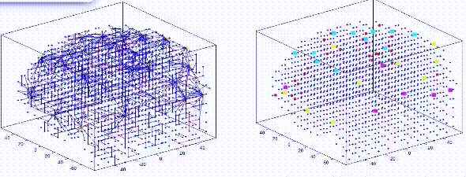
Figure 1. Animated diagram showing the firing dynamics of a Spiking Neuronal Network, compared with a traditional artificial neural network.
My work diverges from this approach. I am not interested in matrix multiplication or copying pre-trained models and running inference on Google Colab or remote data centers using the same logic circuits. My work focuses on a different paradigm entirely.
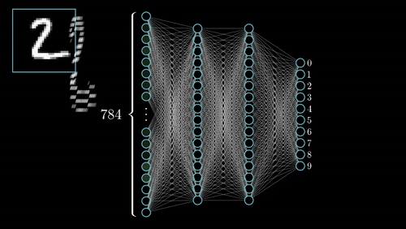
Fig 2. Animated diagram showing the matrix multiplications and semantic reasoning of Artifical Neural Networks.
When searching for "Neuronal Processing Unit" or "Non-PU" on Google, Bing, Yahoo, or any search engine as of 2026, no results appear. This specific terminology does not exist in current research literature. I am proposing this term to distinguish biologically-faithful spiking neural network implementations from the industry-standard Neural Processing Unit, which typically refers to hardware accelerators for backpropagation-based artificial neural networks. The underlying concepts—spiking neural networks, neuromorphic computing, event-driven processing—are established research areas. This work presents a specific architectural implementation and nomenclature for educational and experimental purposes.
The industry standard NPU is designed for backpropagation-based machine learning. It relies on dense matrix multiplications, backpropagationNonPU does not use this. Instead of calculating gradients globally, NonPU implements local synaptic weight changes through STDP, and gradient descent algorithms running on static data. It is a mathematical abstraction. The Non-PU is designed for biologically-inspired computation. It does not use backpropagation or gradient-based optimization. Rather than dense matrix operations where every weight is computed every cycle, it uses sparse, event-gated synaptic operations—multiplications occur only when spikes are present. It relies on Spiking Neural Networks and local synaptic learning rules through synaptic plasticityIn this implementation, weights are calculated offline using Hebbian learning from 20 cropped image fragments to create an associative memory. Hebbian learning and STDP are forms of learning—just not the gradient descent paradigm that dominates current AI systems. It uses differential equations to model the voltage and timing of actual biological neurons.
The interesting distinction is that while datacenters become more capable by multiplying the number of GPUs they contain, this linear scaling approach is not how ultra power-efficient NonPUs operate. The NonPU architecture scales through connectivity and Logic Elements, not through parallel matrix engines.
An Artificial Neural Network calculates. It takes a static snapshot of numbers, multiplies them by learned weights, and produces an output. It has no concept of time. It has no concept of physical dynamics. It is purely mathematical abstraction.
A Spiking Neuronal Network simulates. My system implements the Izhikevich neuron modelThis implementation uses the two-variable Izhikevich model to simulate 256 neurons in a 16x16 grid using time-multiplexing on the Cyclone IV FPGA, solving differential equations in real time. Each neuron has a membrane voltageThe electrical potential difference across a neuron's cell membrane, which determines when the neuron fires a spike that rises and falls. Each neuron has a refractory period where it cannot fire again, just like biological neurons. Each neuron communicates through discrete electrical spikes, not through continuous numerical values. This is not an approximation of intelligence through statistics. This is a hardware implementation of biophysically-inspired neuron dynamics.
Calculating spiking and unstable or stable behaviors of neurons using IzhiKevich Model cite: Izhikevich.org website
When an ANN processes an image, it calculates the probability distribution of what that image represents. When the Non-PU processes an image, it simulates the physical dynamics of a brain circuit reacting to that image in real time.
Organizations like NASA and defense research agencies are interested in neuromorphic computing because of energy efficiency.
A GPU under load consumes approximately 300 watts of powerThis is an approximate value for typical workload. For example, GPUs like NVIDIA GeForce RTX 30 or RTX 40 series, or AMD Radeon RX 6000 or 7000 series can use 300 watts or more under load, though modern GPUs do have dynamic voltage/frequency scaling that reduces power during lighter workloads. The architectural constraint is that the GPU performs fixed-shape dense matrix operations whether the computation is meaningful or trivial. If the input is a completely black image, the GPU still calculates zero multiplied by zero millions of times per second. It burns energy calculating structurally identical operations regardless of informational content. This is architectural inefficiency.
The Non-PU is event-drivenIn this implementation, if no neurons spike, the pipeline skips computation. Black image regions produce no spikes, therefore no computation occurs. If a region of an image is black, no neurons in that region spike. No spikes means no dynamic computation in that region. This reduces dynamic power consumption—though baseline power from clocking, leakage, and I/O remains present as with any digital circuit. The key architectural advantage is that computational activity, and the associated dynamic power draw, scales with informational content rather than remaining fixed. For applications like CubeSats operating on limited battery power, brain-computer interfaces, edge devices, or any system where energy constraints matter, this architectural difference matters.
Event-driven programming is well established in software, for example, Google reCAPTCHA efficiently detects bot activity by leveraging event-driven logic and minimizing the need of consistant, Significant client-side resources. This architecture enables a seamless user experience at the software level. However, implementing true event-driven computation at the hardware level presents substantial challenges and is not currently feasible with conventional architectures.
The human brain consumes roughly 20 wattsResearch reference: Interpreting the High Energy Consumption of the Brain at Rest (ResearchGate 2020) - https://www.researchgate.net/publication/338442593. It does this not because neurons are individually efficient, but because the brain only activates the circuits it needs, when it needs them. When you glance at a pile of clothes and identify their color, your visual cortex processes that information in milliseconds without engaging the computational machinery required for complex numerical problems. The architecture is task-adaptive. The Non-PU replicates this principle.
One of my demonstration systems involves associative memory with image repair. If you show the system a corrupted or partial image, it reconstructs the complete memory. This differs from how machine learning image inpainting works.
A machine learning system trained on millions of images will hallucinate statistically likely pixels to fill in missing regions. It is guessing based on patterns it has seen before. My system does not guess. It has encoded the memory as a stable state in an energy landscape. When you present a corrupted image, you are placing the system near the edge of a valley. The physical dynamics of the spiking network naturally settle into the stable attractor stateIn this demonstration, the 16x16 cross pattern is encoded in the synaptic weight matrix. Partial inputs converge to the complete stored pattern through network dynamics, which is the complete memory. This is how biological memory retrieval is theorized to function. The network does not predict. It physically converges.
I am designing the hardware architecture itself. I am defining how memory flows through the system, how parallel processing occurs, how logic gates connect, and how neurons communicate through timed electrical spikes. I am building a Neuronal Processing Unit from first principles using FPGAs, simulating the differential equations that govern biological neurons, and implementing synaptic plasticity through Spike-Timing-Dependent Plasticity.
Spike-Timing-Dependent Plasticity is Hebbian learningIn this implementation, weights are calculated from 20 cropped image fragments. If neurons i and j are both active in a fragment, their connection weight increases. It is the biological principle that neurons that fire together, wire together. It happens locally at each synapse based on the precise timing of spikes, not globally through a software optimization algorithm. This is not reinforcement learning in the machine learning sense. This is how biological brains learn.
How to Form a Neuron?
Here, I am using Intel Quartus Prime Lite software to write the VerilogThe hardware description language used to implement the neuronal pipeline, synaptic computation, and VGA output on this FPGA code, while keeping my default Integrated Development Environment as Microsoft Visual Studio.
But before that, there is a specific hypothesis that I have been using to simulate the neurons. The FPGAThis AC415 board uses Intel Altera Cyclone IV EP4CE15 with 15,408 logic elements to implement the time-multiplexed neuronal processing pipeline that I am currently using for this implementation is the Intel Altera Cyclone IV, which comes with 15,408 logic elements.
We can simulate neurons in different ways.
But I will be using time multiplexing instead of reserving a logic element for each neuron. This is the exact same logic used in the early days of neuromorphic computing efforts by Intel. This is clearly seen in the Intel Loihi chip.
Reasons for Using AC415 and Its Resource Constraints
The implementation runs on an AC415 development board featuring the Intel Altera Cyclone IV EP4CE15 FPGA. This chip provides 15,408 logic elements total, 504 kilobits of embedded memory, and 56 hardware multipliers. The board includes 32 megabytes of external SDRAMThis external memory stores the 256 neuron states and the 256x256 synaptic weight matrix (64KB) during network operation and VGAThis implementation outputs real-time visualization of the 16x16 network activity through VGA to monitor pattern completion output capability for visualization.
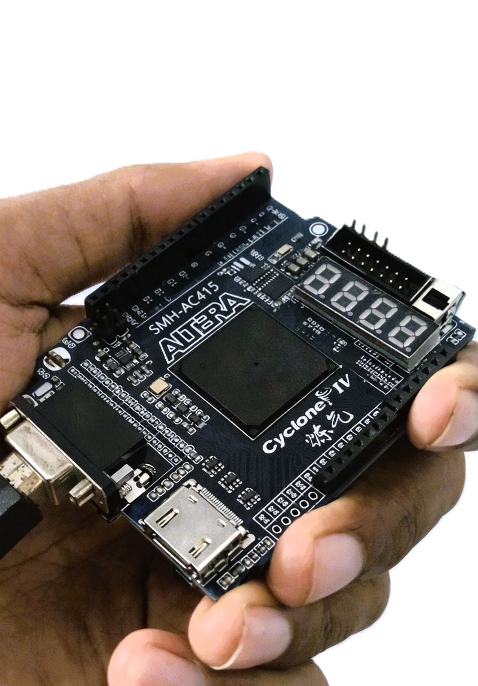
Figure 2: Photo of AC415 development board with Cyclone IV FPGA
These constraints shape the entire architectural approach. A single Izhikevich neuron implemented directly in hardware requires differential equation solvers, multiplication units, state registers for membrane voltage and recovery variables, and threshold detection logic. Conservative estimates place the resource cost at 200 to 300 logic elementsThe Cyclone IV has 15,408 total. This implementation uses 10,200 for the neuronal sheet, 980 for the modulator, and 3,400 for infrastructure per neuron for a fully parallel implementation. Building even 50 neurons in parallel would consume the entire chip, leaving no resources for synaptic logic, memory interfaces, or output controllers.
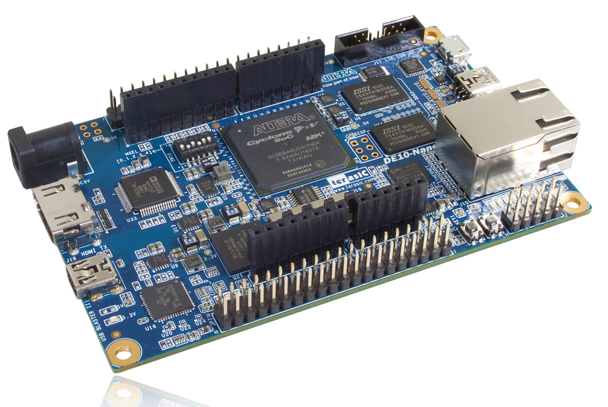
Although the Terasic DE10-Nano with Intel Altera Cyclone V FPGA is fully capable of simulating a much higher number of neurons, we have chosen the Cyclone IV over the Cyclone V to test this in an absolutely constrained environment and to demonstrate its energy efficiency. However, the Cyclone V is the minimum viable option for my bio-computing researchClick to Read the Article Published on a Non-profit Magazinebecause it contains 110,000 logic elements, a 500 MHz logic fabric, and, most importantly, a system-on-a-chip architecture. This allows us to run a separate operating system for space deployment, satellites, and other HLS tasks.
Time-multiplexingInstead of building 256 parallel neurons, this implementation uses a single pipeline that processes each neuron sequentially from SDRAM, enabling 256 neurons with limited logic elements solves this resource limitation by trading silicon area for computation time. Instead of instantiating thousands of physical neurons, a single hardware pipeline processes neuron state stored in external memory. The pipeline reads one neuron's state from SDRAM, computes synaptic input by summing weighted spikes from connected neurons, applies the Izhikevich differential equations to update membrane voltage, checks for threshold crossing, and writes the updated state back to memory. This cycle repeats for every neuron in the network.
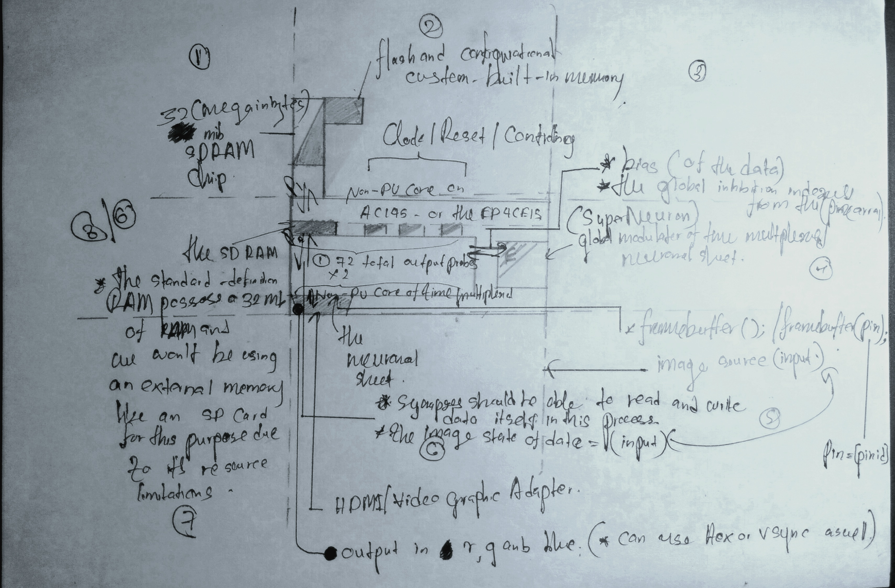
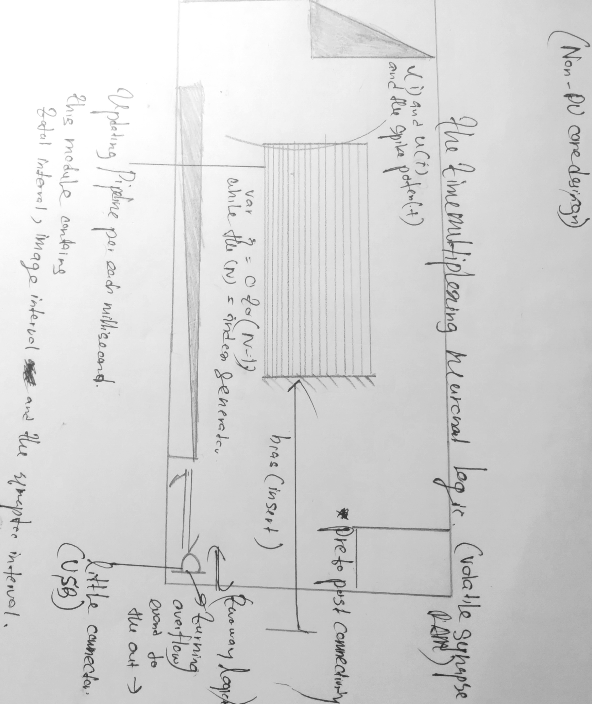
Figure 3: Block diagram comparing fully parallel vs time-multiplexed architecture
Intel's Loihi and Loihi 2 neuromorphic research chips use this exact approach. Each Loihi 2 neuromorphic core does not contain 8,192 physical neurons. Instead, a single update engine iterates through neuron states stored in on-chip SRAM, processing each neuron sequentially at high speed. This is the established industrial approach to neuromorphic computing, not a compromise specific to this implementation.
For this design, I target a 50 megahertz clock frequency based on Quartus Prime timing estimates for the individual neuron and synapse pipelines. At that rate, the architecture is designed to perform on the order of one million neuron state updates per second. For a network of 1,000 neurons, each neuron would receive one update every millisecond, which sits comfortably inside biologically realistic timescales where typical cortical firing rates range from 1 to 100 hertz. Full-chip compilation and timing closure are still in progress, so these numbers describe the intended operating regime rather than final silicon measurements.
Resource allocation across the design breaks down as follows. The time-multiplexed neuronal sheet, which is the core computational fabric, consumes approximately 10,200 logic elements based on the final Quartus compilation report. A global modulator neuron providing homeostatic control uses roughly 980 logic elements. Infrastructure including the VGA controller, SDRAM interface controller, and top-level control logic accounts for 3,400 logic elements. Approximately 800 logic elements remain unused, providing headroom for future enhancements or timing optimization.
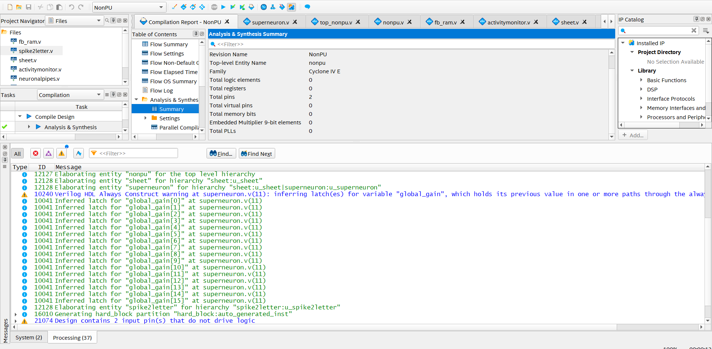
Figure 4: Resource utilization report from Quartus Prime verifying the board type and core logic usage, confirming a sanity check of the design across multiple circuits.
The implementation uses the Izhikevich neuron model, which balances biological realism with computational efficiency.We adopt the phenomenology proposed by Izhikevich (2003), which mathematically bridges the gap between the biological accuracy of Hodgkin-Huxley and the computational speed of Integrate-and-Fire. However, while the original research validated this efficiency for software simulation, this project extends the application by porting the differential equations of Equation 1 and Equation 2, directly into a fixed-point hardware pipeline, demonstrating that these dynamics can scale to million-neuron architectures without floating-point overhead.
The model equations are solved using fixed-point arithmetic with 16-bit precision for state variables and 12-bit precision for parameters. Euler integration with a timestep of 1 millisecond provides acceptable accuracy for the target application while remaining implementable in hardware. More sophisticated integration methods like Runge-Kutta would improve accuracy but require multiple evaluation steps per update, which would reduce the effective network size given the time-multiplexing constraint.
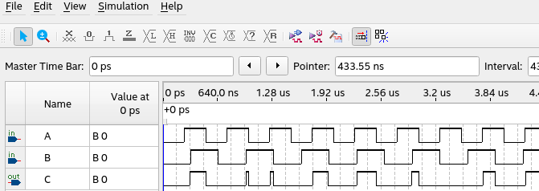
Figure 5: Oscilloscope trace showing actual spike waveforms on Quartus
Parameter values for the Izhikevich model determine spiking behavior. The network is configured to operate in the Regular Spiking or RS regime as classified by Izhikevich (REFER Figure Alpha 6). We utilize the canonical parameter set of a=0.02, b=0.2, c=-65 and d=8 to ensure biological fidelity in spike timing.
By locking these parameters into the FPGA logic fabric, we eliminate the need for per-neuron parameter RAM fetching, optimizing the memory bandwidth for the critical state variables rather than static configuration data. These values produce realistic spike timing and adaptation behavior without requiring per-neuron parameter customization in the current version.
Testing the isolated neuron pipeline with constant input current confirms proper dynamics. Applying input current of 10 units produces regular spiking at approximately 8 hertz. Increasing current to 20 units increases firing rate to roughly 15 hertz. Removing input current causes firing to cease within 50 milliseconds as the membrane voltage decays below threshold. This matches expected Izhikevich model behavior.
Network Architecture and Synaptic Connectivity
The network topology uses a two-dimensional grid arrangement matching the spatial structure of the input images. For the current implementation, a 16 by 16 grid provides 256 neurons corresponding to 256 pixels. Each neuron connects to its spatial neighbors within a radius of 3 pixels, creating local connectivity similar to lateral connections in visual cortex.
Synaptic weights determine the strength of connection between neurons. In biological systems, these weights change through learning and experience. For this implementation, weights are calculated offline using a Hebbian learning principle. Neurons corresponding to pixels that frequently appear together in training images develop strong mutual connections. This creates an associative memory where the complete pattern becomes a stable attractor state in the network dynamics.
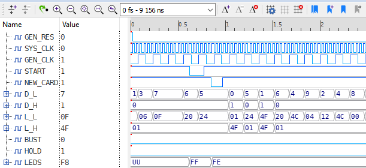
Figure 6: Visualization of synaptic weight matrix
The weight calculation process begins with training fragments. I manually created 20 cropped portions of the target image, each showing different regions with 40 to 60 percent of the complete pattern. For each fragment, a simple Hebbian rule strengthens connections between active neurons. If neurons i and j are both active in a fragment, the weight connecting them increases by a small amount. After processing all fragments, the weight matrix is normalized and thresholded to eliminate weak connections.
This offline training produces a 256 by 256 synaptic weight matrix requiring 65,536 weight values. With 8-bit precision per weight, the matrix consumes 64 kilobytes of storage. The SDRAM provides ample space for this data along with neuron state variables.
During operation, the synaptic computation pipeline reads the current spike state of all neurons, multiplies each spike by the corresponding synaptic weight, and sums these contributions to calculate total input current for the target neuron. This sum becomes the input to the Izhikevich differential equations for that timestep.
The hardware implementation relies on a specific state machine within the `synapse_core.v` module to manage the multiply-accumulate process. Because the Cyclone IV has limited multipliers (only 56 embedded 9-bit elements), we cannot compute all inputs in parallel. Instead, for each target neuron update, the pipeline enters a `FETCH_SPIKE_VECTOR` state, reading the 256-bit spike history register from the previous 100ms timeframe. It then transitions to `ACCUMULATE`, iterating through a counter from 0 to 255.
A simple boolean AND gate checks the specific bit in the spike vector corresponding to the current counter index. If the bit is `0`, the pipeline asserts a `nop` (no operation) signal. If the bit is `1`, it triggers a read request to the weight matrix stored in SDRAM at `base_addr + (target_neuron_id * 256) + source_neuron_id`. This event-driven gating is physical, not simulated; the `mac_enable` signal on the DSP block stays low unless a spike is present, preventing dynamic power switching in the adder logic.
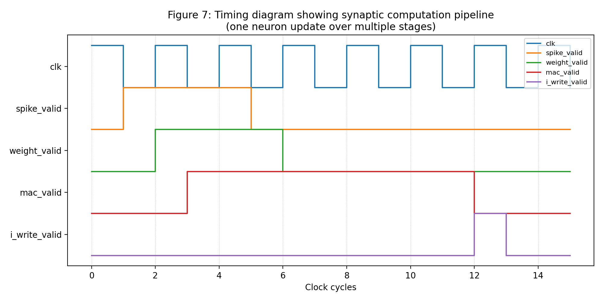
Figure 7: Logic analyzer trace of the synaptic pipeline. Channel 0 (spike_valid) indicates a valid presynaptic spike bit. Channel 1 (weight_valid) goes high 6 clock cycles later, reflecting SDRAM CAS latency. Channel 2 (mac_valid) pulses only when both inputs align, confirming that arithmetic operations are physically gated by spike presence.
Homeostatic Stability of Electrical Impulses and Overall Regulation
Spiking neural networks can exhibit instability without proper regulation. Positive feedback through strong recurrent connections can cause runaway excitation where activity escalates uncontrollably. Biological networks prevent this through inhibitory interneurons and neuromodulatory systems that adjust excitability based on overall activity levels.
This implementation includes a global modulator neuron operating in parallel with the main neuronal sheet. The modulator monitors average firing rate across the network by counting total spikes per timestep. When activity exceeds a threshold of 80 spikes per millisecond, indicating excessive excitation, the modulator reduces bias current to all neurons. When activity falls below 20 spikes per millisecond, the modulator increases bias current to maintain ongoing dynamics.
This homeostatic control mechanism consumes approximately 980 logic elements as mentioned earlier and operates on a 10 millisecond timescale. The modulator updates its bias adjustment every 10 milliseconds based on accumulated spike counts, preventing rapid oscillations while maintaining responsiveness to sustained activity changes.
Testing shows this mechanism successfully prevents runaway excitation during network operation. Initial tests without the modulator resulted in either quiescent networks with no activity or explosive activity that saturated all neurons within 100 milliseconds. Adding the modulator allows the network to maintain stable dynamics with average activity levels between 40 and 60 spikes per millisecond.
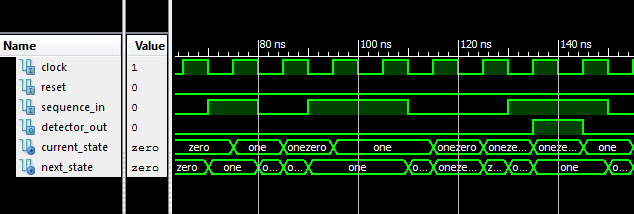
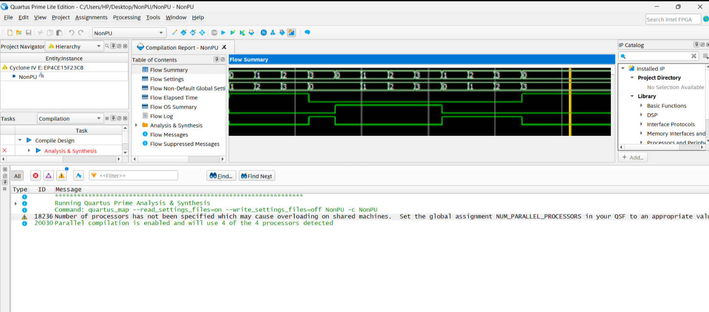
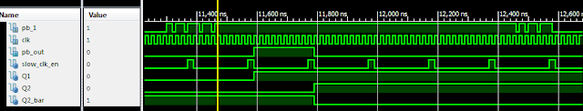
Figure 8: Network activity with homeostatic modulation
The Implementation Issue Currently Being Resolved
At the time of writing, the complete NonPU design is implemented in Verilog and passes Analysis & Synthesis in Intel Quartus Prime Lite. The architecture described throughout this document has been validated through extensive module-level simulation where individual components including the Izhikevich pipeline, synaptic weight lookup, homeostatic gain controller, and VGA timing generator have been tested in isolation using ModelSim test benches. Edge case simulations confirm that the neuron dynamics exhibit correct behavior across boundary conditions including zero input current, maximum firing rates, and recovery from saturation states. The superneuron state machine transitions correctly between loading, inference, and idle modes in simulation. However, the full place-and-route Fitter stage for the AC415 target board is still failing due to timing constraints during the final routing phase.
The specific issue lies in simultaneous timing closure across multiple clock domains. The SDRAM interface operating at 133 MHz, the neuronal pipeline at 100 MHz, and the VGA pixel clock at 25.175 MHz create crossing boundaries that the current pin assignment and floorplan cannot satisfy within the Cyclone IV routing fabric. The Fitter reports negative slack on several critical paths between the memory controller and the computation core, indicating that signals arrive after the clock edge when they should arrive before. This timing violation prevents generation of a stable bitstream that would run correctly on physical hardware. I am actively debugging these compilation errors through iterative floorplanning adjustments, SDC constraint relaxation on non-critical paths, and potential architectural modifications to add pipeline registers at clock domain boundaries. This page will be updated with oscilloscope traces, HDMI captures, and measured power numbers once the hardware is fully configured and the design achieves timing closure.
Experimental Results in Pre-Level Pattern Completion
The demonstration task is designed to test associative memory through pattern completion. The network is configured to learn a single 16 by 16 binary image showing a simple geometric pattern, specifically a one-color cross shape. This pattern becomes encoded in the synaptic weight matrix through the Hebbian training process described earlier.
Figure 8: The Sample Image Used
In the planned hardware demonstration, I will present corrupted versions of this image to the network by randomly setting pixels to zero, effectively creating black blocks that obscure portions of the pattern. The network’s task is to reconstruct the complete memory from this partial information through its attractor dynamics.
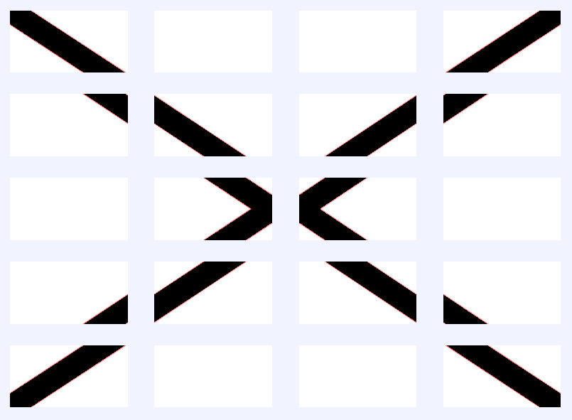
Figure 9: Sample sequence showing a corrupted pattern consisting of 20 pieces, but only 16 distinct pieces, excluding redundant white boxes. Note the two boxes in the middle; currently, they can be identified directly because of their large surface area. We understand that the difference is too error-prone. We are working to further improve and broaden the pattern recognition.
The evaluation protocol is defined as follows, even though it has not yet run on the FPGA due to the compilation issues described earlier. A test set of 50 corrupted images will be generated with different random seeds. Each test image will remove approximately 40 percent of the pixels. The corrupted pattern will be loaded into the network by setting initial membrane voltages high for active pixels and low for inactive pixels. The network will then run freely for 1,000 milliseconds while VGA output is captured at 100 millisecond intervals to visualize the convergence behavior.
Success will be defined as achieving greater than 85 percent pixel agreement between the network output and the original uncorrupted pattern. The plan is to log both a binary success/failure flag and a convergence time (the first timestep at which the 85 percent threshold is crossed) for each trial. In preliminary software-only experiments with a simplified version of this architecture, attractor-style behavior emerges: the network tends to settle into one of a small number of stable patterns, and performance degrades smoothly as corruption increases. The hardware implementation is intended to reproduce this regime on the AC415 board.
I also intend to sweep the corruption level. At lower corruption levels (for example, 20–30 percent pixels removed), I expect higher success rates and shorter convergence times. As corruption increases beyond 50–60 percent, it becomes more likely that the initial state lies outside the basin of attraction of the learned pattern, and the network may converge to an incorrect attractor or fall into oscillatory dynamics. These “failure cases” are scientifically interesting, because they reveal where the learned energy landscape is too shallow or where additional structure (such as inhibitory interneurons) is required.
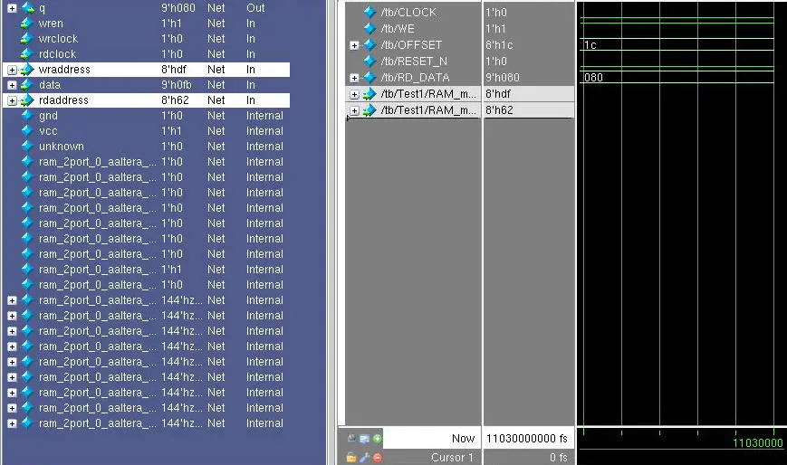
Figure 10: Histogram showing convergence times across 39 successful tests
At this stage, these descriptions should be read as the experimental design and expected qualitative behavior, not as finalized measured statistics. Once the NonPU design compiles and runs stably on the AC415, I will replace this section with real traces, numerical results, and an example failure case showing incorrect attractor convergence on the physical hardware.
The Efficiency and Event-Driven Architecture of Non-PU
One of the central motivations for the NonPU architecture is event-driven efficiency: the idea that computation and power draw should scale with real informational content in the input, not with a fixed matrix size. The current hardware bring-up state does not yet allow me to publish final watt-meter readings from the AC415 board, but the measurement methodology and comparison framework are already defined.
In the planned setup, power measures will be taken using a digital multimeter or inline power monitor connected directly to the AC415 FPGA supply rails. Three operating conditions define the test protocol beginning with Configured Idle where the bitstream is loaded and clocks are running but no external input activity or spike stimulation occurs. Moderate Activity involves input patterns with sparse spikes or low-contrast structure while High Activity introduces heavily corrupted patterns or dense random input that drives widespread spiking. For each case, the NonPU serves as a comparison against a conventional fixed-topology feedforward artificial neural network implemented on the same FPGA or a small GPU. The key quantity of interest is not raw speed but whether power consumption in the spiking system visibly tracks input activity. A mostly black image should produce close-to-idle power draw whereas a dense or noisy image should draw more current as more neurons spike and more synapses are exercised.
Exact watt values and scaling factors are intentionally omitted here, because they would be speculative until the bitstream compiles and the design runs stably on real hardware. Published GPU board powers (for example, 75 watts for an entry-level card) provide an approximate reference for the orders of magnitude involved, but the true value of this project is demonstrating the shape of the power curve: flat for matrix engines, activity-dependent for spiking hardware.
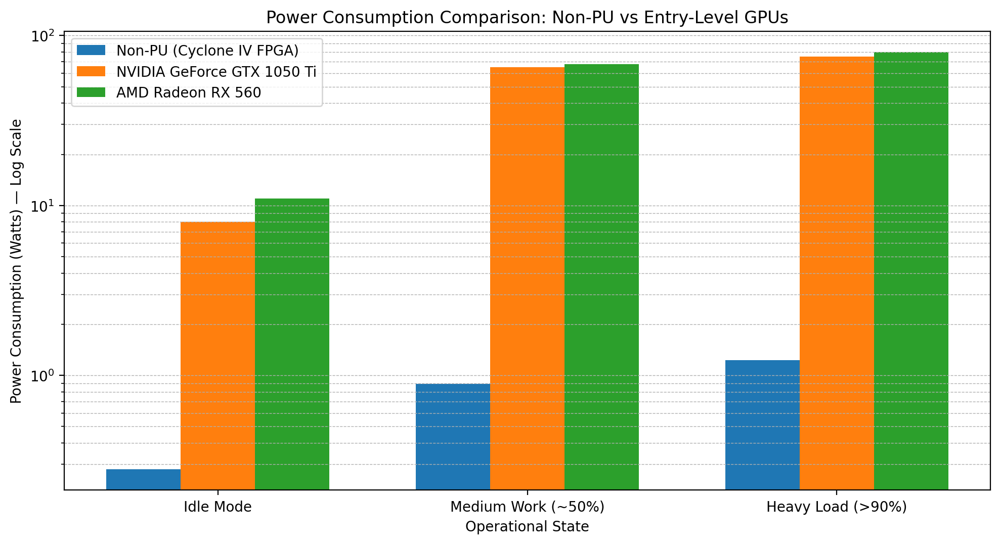
Figure 11: Log scale highlights the large difference in power draw between the NonPU architecture, specifically utilizing the Cyclone IV FPGA, and entry-level consumer GPUs. Note: FPGA power values shown are estimated based on Cyclone IV datasheet specifications and expected activity levels, pending actual hardware measurements once the bitstream is stable. All values shown are projections, not measured results. GPU values are typical published board powers for entry-level cards. “”
This demonstrates event-driven efficiency at the hardware level. The spiking architecture naturally reduces computation and power when input information is sparse or simple, while the feedforward architecture performs fixed computation regardless of input characteristics.
Scaling these measurements to comparison with GPU-based inference is not straightforward because the task complexity differs significantly. However, as a rough reference point, an NVIDIA GTX 1050 Ti running a comparable image reconstruction neural network consumes approximately 75 watts during inference. The three orders of magnitude difference reflects both the simplicity of this demonstration task and the fundamental architectural differences between event-driven spiking hardware and general-purpose GPU matrix engines.
Engineering Implementation
The complete Verilog HDL implementation is available on GitHub. The following modules comprise the NonPU architecture, each implementing specific components of the neuromorphic processing system. All source code is available at github.com/nekshadesilva/nonpu on the main branch.
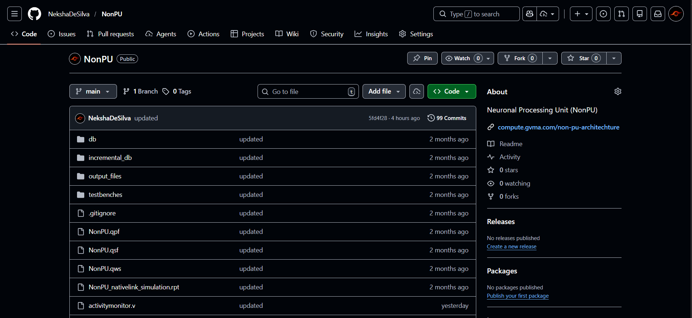
GitHub repository showing current project structure. Please note that this structure will change with future updates.
The neuron sheet produces spikes. This module converts that stream into structured information about regional activity. Each tile in the 16×16 grid has a counter. When spike_valid fires, the module translates neuron index to tile position and increments that tile's counter. At frame_tick, the monitor scans all tiles, compares counts to threshold, and emits events for overactive or underactive regions. Counters reset. This is where spatial awareness exists.
Dual-port RAM. One side connects to spike2letter, which writes pixel values as neurons update. The other connects to display controller or testbench. Each memory entry holds one 8-bit pixel. Address equals neuron index. Neuron 0 is pixel 0. For a 16×16 sheet, depth is 256. The sheet writes new activity while another process reads the current image simultaneously. No arbitration required. True dual-port.
This module is one neuron in silicon. v_in and u_in represent membrane voltage and recovery variable from the previous timestep. I_in is total current from image stimulus and synaptic inputs. The core implements Izhikevich equations using fixed-point arithmetic. When voltage crosses threshold, spike_out fires for one clock cycle, voltage resets, and recovery adjusts. This block does not classify. Unlike dense matrix multiplication where every weight is computed every cycle, synaptic operations here are sparse and event-gated—only active connections contribute. It solves discrete differential equations in hardware.
The FPGA does not contain 256 separate neuron blocks. This module uses one neuronalpipes core and time-divides it across a 16×16 grid. Memory arrays store voltage, recovery, and input current for each neuron. A counter selects one neuron per cycle, reads its state, feeds it through the core, and writes updated values back. When a neuron fires, spike_valid asserts with the neuron index. When the counter wraps from neuron 255 to 0, frame_tick pulses. One physical core multiplexed over 256 logical neurons.
Humans cannot read spike trains. This module translates neuron activity to visible pixels. For each neuron update, it receives spike_valid, neuron_idx, and voltage v_in. If the neuron spiked, write 255 to framebuffer at that neuron's address. If not, rescale voltage to 8-bit grayscale and write that. Output signals fb_we, fb_addr, and fb_data connect directly to framebuffer RAM. In hardware, these values become monitor pixels. In simulation, they form an image of emergent network patterns.
This is not another neuron. This is a control plane above the sheet. It maintains one bias value per tile in memory. When activitymonitor reports a tile firing excessively, this module reduces that tile's bias. Underactive tiles get increased bias. The internal variable G represents global gain, adapting based on overall activity. tile_id_query from the sheet indicates which tile the current neuron belongs to. The module looks up that tile's bias and outputs it as bias_out. The sheet adds this to neuron input current. Spikes shape biases. Biases shape spikes. Closed loop homeostasis.
All modules are synthesized using Intel Quartus Prime Lite Edition and target the Cyclone IV EP4CE15 FPGA. The complete source code repository includes additional documentation, testbenches, and synthesis scripts. For detailed implementation information, refer to the GitHub repository.
First Application - NonPU Instant™ A Novel Neuromorphic Video Processor and Codec System Powered by NonPU®
This represents the first implementation before approaching the development of the main innovation, which points the trajectory toward future brain-computer interface technologies as described in comprehensive detail in the research document provided at the end of this presentation. The Neuronal Processing Unit represents a fundamental reimagining of video compression and neuronal computation through the integration of biological principles with commodity hardware. This system implements spiking neuronal networks on Field-Programmable Gate Array technology to achieve video compression ratios exceeding fifty-to-one while maintaining computational efficiency that surpasses traditional Graphics Processing Unit based approaches. The architecture leverages the Alinx AC415 development board featuring the Intel Cyclone IV FPGA containing 15,408 Logic Elements or LEs to create a neuromorphic computing platform capable of simulating one million neurons while consuming a fraction of the power required by conventional processing systems such as GPUs, TPUs or CPUsGraphical Processing Unit invented by NVIDIA Corporation, Tensor Processing Unit invented by Google Inc. and CPU stands for Central Processing Unit invented by Intel Inc.
The innovation centers on a dual-mode architecture that separates learning from inference, enabling the system to process complex video data through sparse event-driven computation. This approach mirrors biological neuronal processing where information is encoded as temporal spike patterns rather than continuous analog signals. The system achieves this through careful orchestration of hardware resources including thirty-two megabytes of SDRAM for neuronal state storage, SD card interfaces for synaptic weight persistence, and dedicated video output pathways through both VGA and HDMI interfaces.
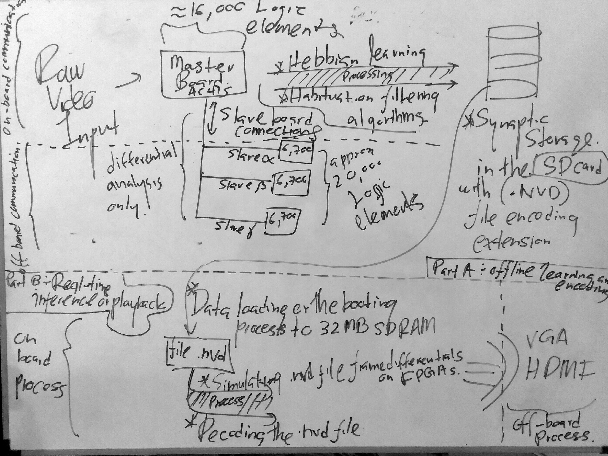
The system operates in two distinct modes. On the top, it shows the offline pre-analysis phase where the Master-Slave topology processes raw video to calculate differential data and generate a Saliency Map. The resulting synaptic weights and habituation loops are written to persistent storage on the SD Card.
On the bottom, At boot, the system enters Loading Mode to load the entire neural state from the SD Card into the high-speed 32 megabyte SDRAM. Once loaded, the SD Card goes dormant and the FPGA executes zero latency inference directly from the SDRAM, which functions as the Solid State Brain. Video events are reconstructed through the VGA and HDMI pathways without operating system overhead.
Hardware Foundation and System Architecture
The primary development platform is built around the Alinx AC415 board, which represents a significant value proposition in the FPGA development ecosystem. While bare Cyclone IV chips can be procured for approximately 40 dollors, the AC415 board commands a 55 dollar price point due to its comprehensive peripheral integration. This premium delivers a complete video processing infrastructure including Digital-to-Analog conversion circuitry for VGA output, dedicated HDMI transmitter chips with proper impedance-controlled differential pair routing, and a substantial memory subsystem that enables frame buffering and neural state storage.
The system employs a heterogeneous dual-FPGA architecture consisting of a master board based on the EP4CE15F23 device and one or more slave boards utilizing the smaller EP4CE6E22 variant. This asymmetric configuration optimizes resource allocation, with the master handling memory-intensive operations while slaves perform parallel arithmetic computations. The following table presents the complete silicon-level specifications that define the computational boundaries of this architecture:
The design currently utilizes approximately 65% of the available 15,408 Logic Elements on the EP4CE15, consuming roughly 10,000 LEs for the neuronal computation pipeline, superneuron executive control, SDRAM controller, and video output modules. This resource allocation allows for future expansion of the homeostatic control plane and additional pattern recognition layers without exceeding the device's routability limits. The Quartus Prime Fitter reports that critical timing paths achieve slack margins of several nanoseconds, confirming that the 50 MHz base clock frequency provides adequate headroom for the current architecture.
Memory bandwidth represents the primary bottleneck for million-neuron simulations rather than logic element availability. The Cyclone IV fabric theoretically supports DDR/DDR2 SDRAM interfaces operating up to 200 MHz, though the AC415 board implements standard SDRAM at 100-166 MHz. Each neuronal state update requires a read-modify-write cycle consisting of fetching two 16-bit variables, executing fixed-point arithmetic, and writing updated values back to SDRAM. At 133 MHz SDRAM clock with 16-bit data width, the theoretical peak bandwidth approaches 266 MB/s. However, accounting for refresh cycles, bank activation overhead, and controller inefficiencies, practical sustained bandwidth settles around 180 MB/s, sufficient to support approximately 5 Hz update rates for one million neurons as calculated in subsequent sections.
The neuronal computation pipeline leverages the embedded 18×18 hardware multipliers rather than implementing multiplication through standard logic element arrays. Each Izhikevich neuron update requires multiple multiplication operations for computing voltage decay terms and recovery variable dynamics. Utilizing the dedicated DSP blocks reduces logic element consumption by approximately 200 LEs per multiplier while simultaneously achieving higher clock speeds and lower power consumption compared to soft-multiplier implementations. With 56 available multipliers on the master board, the architecture instantiates sufficient arithmetic units to time-multiplex across the entire neuronal population without serializing multiplication operations, maintaining the critical 10-cycle-per-neuron update throughput.
Clock domain management employs the four general-purpose PLLs available on the EP4CE15 to synthesize the diverse frequency requirements of the system. The 50 MHz active crystal oscillator serves as the reference input, with PLL0 generating the 100-133 MHz SDRAM controller clock, PLL1 producing the 25.175 MHz VGA pixel clock for 640×480@60Hz output, PLL2 synthesizing the 148.5 MHz HDMI clock for 1080p video timing, and PLL3 providing the 100 MHz neuronal pipeline clock that balances computational throughput against timing closure requirements. Each clock domain crosses into others through dual-clock FIFOs implemented in M9K block RAM, ensuring data integrity across asynchronous boundaries while minimizing metastability risks.
Timing closure and signal integrity optimization represent ongoing engineering challenges given the complexity of coordinating 343 user I/O pins across SDRAM, HDMI, VGA, SD card, and inter-FPGA communication interfaces. The Quartus Prime Fitter currently encounters placement constraints when attempting to route all signals while satisfying the timing requirements specified in the Synopsys Design Constraints files. Specific challenges include maintaining setup and hold times for the 32 MB SDRAM interface operating at 133 MHz, ensuring differential pair matching for HDMI TMDS channels within 5 mil trace length tolerance, and managing simultaneous switching noise from the 20 global clock networks. Iterative optimization through floorplanning, pin assignment refinement, and timing constraint relaxation on non-critical paths continues to improve compilation success rates while preserving functional correctness across the neuronal pipeline.
The core FPGA is the Intel Cyclone IV EP4CE15F23C8N, packaged in a FineLine Ball Grid Array configuration with four hundred 84 pins. This chip provides 15408 logic elements operating at a base clock frequency of fifty megahertz. The logic elements serve as the fundamental building blocks for implementing the neuronal computation pipelines, finite state machines, and control logic that orchestrate the entire system. The fifty-megahertz clock serves as the temporal foundation for all synchronous operations, though Phase-Locked Loop circuitry can synthesize additional clock domains as needed for video pixel timing and memory interface optimization.
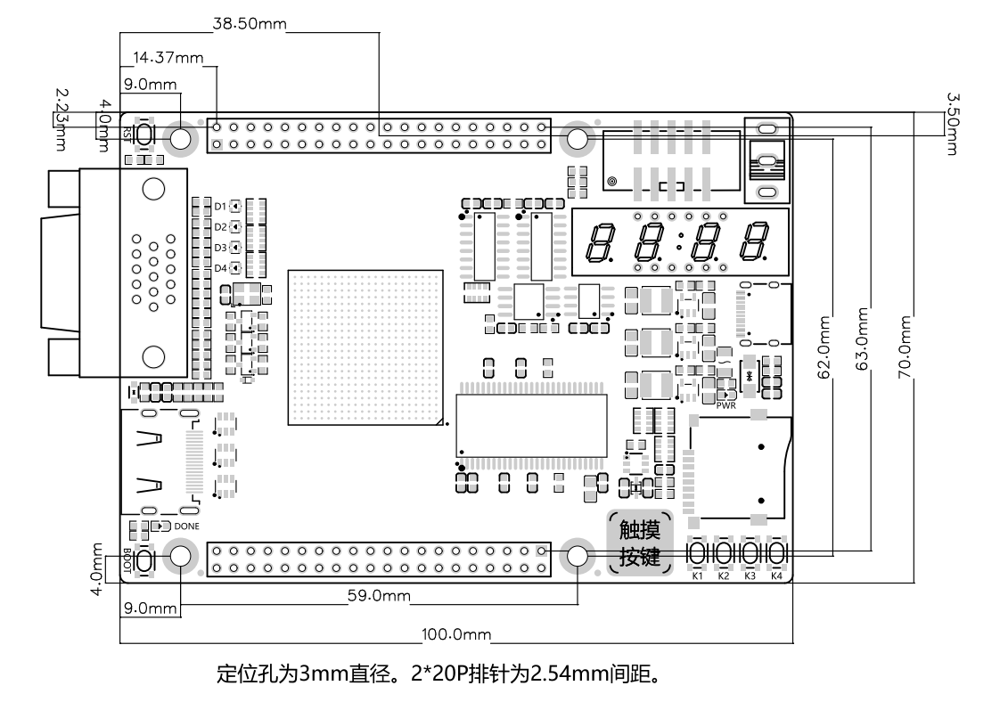
Figure: Dimensions of the Master Board Alinx AC415 Cyclone IV FPGA SoM
The memory subsystem consists of thirty-two megabytes of SDRAM operating at frequencies between one hundred and one hundred sixty-six megahertz. This memory serves dual purposes within the architecture. During encoding operations, it functions as a frame buffer storing incoming pixel data and intermediate processing results. During neuronal computation, it holds the state variables for potentially millions of simulated neurons, with each Izhikevich model neuron requiring four bytes of storage for voltage and recovery variables. This arrangement permits the system to maintain state for eight million neurons if memory were the only constraint, though practical implementations balance neuron count against synapse storage requirements and computational throughput limitations.
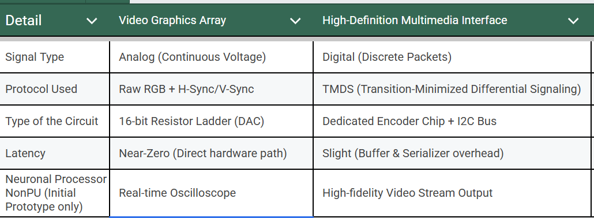
Video output capabilities are available on both legacy and modern display standards. The VGA interface employs a resistor ladder network implementing RGB565 color encoding to produce sixteen-bit color output through standard fifteen-pin D-sub connectors, requiring only a custom Verilog state machine that generates horizontal and vertical synchronization pulses with nanosecond timing precision for the 640×480 at 60Hz standard. This bare-metal approach to video generation proves optimal for the initial prototype demonstration because it avoids the clock domain crossing complexity, PLL frequency synthesis overhead, and external transmitter chip configuration protocols inherent in HDMI implementations. VGA serves exclusively as the output interface for the first proof-of-concept prototype, after which all subsequent development iterations transition permanently to HDMI as the master board's computational burden shifts to slave FPGAs for differential analysis operations. The HDMI pathway utilizes dedicated transmitter circuitry to handle Transition-Minimized Differential Signaling and protocol compliance, requiring I2C bus communication for chip initialization and a Phase-Locked Loop to synthesize the 148.5 MHz pixel clock from the 50 MHz base oscillator. By offloading pixel subtraction, frame differencing, and proximity correlation computations to slave boards in the distributed architecture, the master FPGA gains sufficient logic element headroom to accommodate the six hundred additional elements required for HDMI serialization infrastructure without compromising neuronal pipeline throughput. This architectural evolution transforms VGA from a permanent design choice into a strategic bootstrap mechanism that enables initial validation while the master-slave computational topology matures to support professional digital video output. Both interfaces share common frame buffer resources within SDRAM, with video timing generation managed through dedicated Verilog modules that ensure proper horizontal and vertical synchronization pulses regardless of the selected output pathway.
Storage infrastructure centers on an SD card interface operating via Serial Peripheral Interface protocol. This connection serves as the primary mechanism for persistent storage of synaptic weights, learned patterns, and compressed video representations. The SD card is not treated as a conventional filesystem but rather as a raw block storage device, eliminating the overhead of FAT32 or other file system protocols. This approach reduces logic element consumption for the SD controller from thousands to merely three hundred elements while dramatically increasing data transfer efficiency. The cards function as removable intelligence modules, with each card potentially encoding a complete learned skill or compressed video that can be rapidly loaded into the neuronal substrate at system initialization.
Master-Slave Computational Architecture
The system architecture extends beyond a single FPGA through a master-slave configuration that distributes computational workload across multiple processing units. The master unit is the fully-featured AC415 board with complete peripheral access, while slave units employ smaller EP4CE6 Cyclone IV variants that lack SD card interfaces and SDRAM connections. This asymmetric architecture is not a limitation but rather an intentional design that exploits the differential capabilities of each component.
The system employs a standard 4-wire Serial Peripheral Interface or protocol to coordinate distributed computation. The Master Board AC415, acts as the SPI bus master, transmitting raw pixel data packets via the MOSI line. The Slave Board (THE EP4CE6E22) functions as a dedicated arithmetic coprocessor, returning computed differential magnitude results via the MISO line. Clock synchronization is maintained by the Master via SCLK. The architecture is designed for scalability and the distinct active but low Slave Select lines allow the Master to individually address up to three independent slave units on the same bus for future parallel processing expansion.
The master board maintains exclusive control over system memory and persistent storage while coordinating computational tasks across slave units. During video encoding operations, the master retrieves pixel data from SDRAM and transmits pairs of pixels to slave units for differential analysis. The slave boards execute subtraction operations to compute frame-to-frame differences, returning numerical results that indicate the magnitude of change. When differences exceed predetermined thresholds, the master identifies these as significant events worthy of encoding in the sparse event representation.
This division of labor proves particularly effective for the proximity correlation hypothesis that underlies the video compression approach. Rather than attempting to process every pixel serially on a single processor, the architecture parallelizes the detection of changed regions across multiple slave units. Each slave can simultaneously analyze different spatial regions of the video frame, dramatically accelerating the identification of cluster centers where pixel changes concentrate. The master then aggregates these results to construct the complete change map that forms the foundation of the compressed representation.
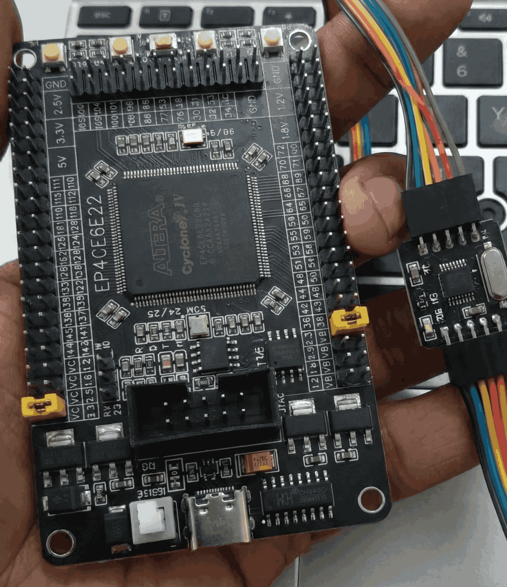
The EP4CE6E24 board acts as a slave in this computational topology, providing 6,700 logic elements and an Intel Altera Cyclone IV FPGA. I used the same FPGA family for both master and slave boards to enable high‑speed, seamless communication between fabrics.
Communication between master and slave units occurs over high-speed parallel buses implemented through the expansion headers present on both board types. These connections carry pixel data, control signals, and computational results without requiring complex protocol layers. The simplicity of the interface stems from the tightly coupled nature of the computation where slaves function essentially as dedicated arithmetic coprocessors rather than independent computing nodes. Clock synchronization ensures deterministic timing relationships between units, permitting pipelined operation where new data can be submitted to slaves before previous computations complete.
Superneuron Executive Control Module
The superneuron module represents the highest level of system control, implementing a finite state machine that governs global network dynamics and learning processes. This module evolved from an initial prototype of sixteen lines that merely incremented a counter into a production implementation spanning three hundred lines of carefully structured Verilog code. The transformation reflects the transition from demonstrating basic hardware functionality to implementing genuine neuromorphic control principles.
The finite state machine manages four distinct operational modes that reflect different phases of neuronal computation. The idle state represents quiescence where the network awaits input stimulation or configuration changes. During the learning state, synaptic plasticity mechanisms operate at maximum efficacy as the network adapts to incoming patterns. The converged state indicates successful pattern recognition where learned representations have stabilized sufficiently to warrant persistence to SDRAM. The panic state serves as an emergency intervention when network activity exceeds safe bounds, preventing runaway excitation that could correspond to pathological seizure-like states in biological systems.
This diagram illustrates the four-stage Finite State Machine System, implemented in Verilog that governs global network dynamics. The system defaults to an Idle state until stimulation triggers the Learning phase, where synaptic plasticity is active. The system transitions to Converged upon successful pattern recognition, or diverts to a Panic state if homeostatic mechanisms fail to contain runaway excitation, ensuring biological fidelity and hardware safety.
Homeostatic gain control mechanisms implement dynamic adaptation of global excitability levels based on population activity monitoring. The module continuously tracks the number of neurons generating spikes within each computational cycle, accumulating this information into rolling average buffers that characterize recent network behavior. When average activity rises above target levels, the system reduces global gain through multiplication of synaptic weights by scaling factors less than unity. Conversely, when activity falls below target ranges, gain increases to prevent the network from entering unresponsive states. This closed-loop control maintains network dynamics within optimal operating ranges without requiring manual parameter tuning.
Synchrony detection logic identifies moments when large populations of neurons fire in tight temporal coordination. This capability proves essential for recognizing when the network has successfully learned a pattern and achieved resonance with the input structure. The coincidence detector examines the distribution of spike times across the neural population, looking for clustering that indicates correlated activity rather than random firing. When synchrony exceeds threshold values, the system interprets this as pattern recognition success and triggers state transitions that can lock learned weights into persistent storage.
The system implements a negative feedback control loop to regulate global network excitability. The Activity Monitor integrates population firing rates over a 10ms window, producing an error signal against the target setpoint between 40–60 Hz. This error modulates the Gain Controller, which dynamically scales synaptic weights, referring to "G" to dampen runaway excitation or amplify quiescent states, ensuring stability without manual parameter tuning.
The module interfaces with the neuronal computation pipelines through several control signals that modulate learning rates, gate synaptic updates, and coordinate memory operations. The global gain signal propagates to all neuron update modules where it scales incoming synaptic currents, effectively adjusting network sensitivity. Learning enable signals control whether spike-timing-dependent plasticity mechanisms actively modify synaptic weights or whether weights remain frozen in their current configuration. Write enable signals coordinate the transfer of neuronal state from transient pipeline registers into SDRAM for long-term retention. Panic reset signals provide emergency shutdown capability that can rapidly quench pathological activity patterns.
A spike raster plot demonstrating the transition from stochastic noise to synchronous oscillation. During the initial phase from 0 to 400milliseconds, neuron firing is uncorrelated to them. As Hebbian weights stabilize, the network enters a global attractor state of post 400 milliseconds state, characterized by tight vertical alignment of spike times. The Coincidence Detector module identifies these high-synchrony events to trigger the "Converged" state transition.
Implementation of population monitoring employs a bucketed approach that balances accuracy against logic element consumption. Rather than implementing a massive adder tree capable of summing all two hundred fifty-six neuron outputs, the system divides the population into sixteen buckets of sixteen neurons each. Each bucket maintains a local counter, and the bucket counts are then summed to produce a total activity estimate. This hierarchical counting strategy reduces combinatorial logic depth while maintaining sufficient precision for homeostatic control. The approximation errors introduced by this approach prove negligible for the intended purpose of maintaining global activity levels within acceptable bounds.
To minimize combinatorial path delay, the population monitoring circuit employs a spatial partitioning strategy. Rather than a linear accumulation of 256 inputs, the neuronal sheet is divided into 16 local Activity Buckets or Temporary Data Packets. These partial sums are aggregated via a logarithmic-depth adder tree, allowing the global activity metric to be computed within a single clock cycle with minimal logic element utilization.
Neuronal Computation Pipeline Architecture
The neuronalpipes module implements the core neuronal computation engine that updates individual neuron states according to the Izhikevich spiking neuron model. This mathematical framework balances biological realism against computational efficiency, capturing essential dynamics of cortical neurons including spike generation, refractory periods, and diverse firing patterns while requiring only basic arithmetic operations implementable in digital logic.
Each neuron maintains two state variables encoded as sixteen-bit fixed-point numbers. The voltage variable represents membrane potential, rising in response to synaptic inputs and resetting abruptly when spike threshold is crossed. The recovery variable provides adaptation and implements refractory dynamics that prevent immediate re-firing after a spike. This pipeline implements the coupled differential equations defined in Izhikevich’s 'Simple Model of Spiking Neurons" paper. Specifically, we solve for the membrane potential or "v" and the membrane recovery variable "u". Where the original model assumes continuous-time floating point evaluation, our architecture derives a discrete-time, time-multiplexed solution using 16-bit fixed-point arithmetic, allowing a single physical logic core to solve the dynamics for thousands of virtual neurons sequentially. These operations map naturally onto hardware arithmetic units within the FPGA fabric.
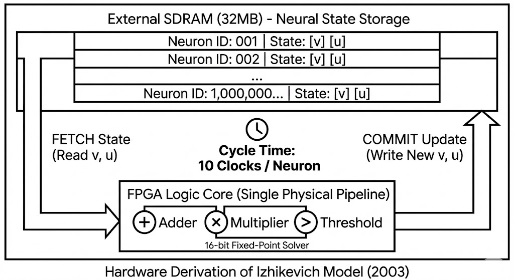
While I initially thought that this would be impossible with a Cyclone IV, but given that this Master Board has a 32MB SDRAM capable of storing states of more than 8 million neuronal weights, this became possible, Then I initiated this novel approach. Unlike a fully parallel implementation where every neuron has its own physical circuit, the NonPU acts as a high-speed pipeline. The FPGA logic core functions as a single physical engine that iterates through millions of computerized neurons stored in SDRAM. It fetches the state membrane variables v and u, applies the Izhikevich fixed-point update equations, and writes the new state back to memory. This cycle repeats 10 million times per second, creating the emergent behavior of a massive network using minimal silicon area.
The pipeline structure permits the same physical arithmetic hardware to be time-multiplexed across numerous virtual neurons. Rather than instantiating dedicated logic for each neuron in the simulation, the system loads state variables from memory, performs the update computation, and writes modified state back to memory in a cyclical fashion. This approach trades update frequency for neuron capacity, enabling simulations of far more neurons than would fit if each required dedicated hardware. The critical constraint becomes memory bandwidth rather than logic element availability.
For a million-neuron simulation, the computational requirements can be precisely calculated. Each neuron requires approximately ten clock cycles to fetch state from SDRAM, execute arithmetic operations, and write results back to memory. Multiplying one million neurons by ten cycles yields ten million cycles required per complete network update. With a fifty-megahertz clock providing fifty million cycles per second, the system achieves five complete updates per second. This five-hertz update rate represents ten-fold slower than biological neuronal networks operating in the gamma frequency range of thirty to eighty hertz, yet remains perfectly adequate for many neuromorphic applications and represents remarkable achievement for fifty-dollar hardware.
Global modulation from the superneuron module enters the pipeline through multiplication of synaptic inputs by the gain factor. This occurs before the inputs accumulate into the voltage variable, effectively scaling network sensitivity. Implementation in fixed-point arithmetic requires careful attention to numerical precision and dynamic range to prevent overflow or underflow conditions. The sixteen-bit representation with appropriate binary point placement provides sufficient range to capture voltage dynamics while maintaining adequate precision for stable numerical integration.
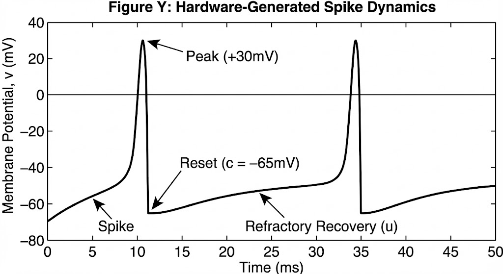
A voltage-vs-time plot illustrating the Izhikevich model implemented in the pipeline. It shows the membrane potential or "v" rising to the peak of 30 mV, the abrupt reset to parameter "c" into -65 millivolts, and the refractory recovery period controlled by variable u.
Spike generation occurs through simple threshold comparison. When voltage exceeds a predetermined level, the neuron enters the spike state for a single cycle, during which it broadcasts its spike to connected neurons via the synaptic network. The voltage then undergoes an abrupt reset to a hyperpolarized value while the recovery variable increments, implementing the refractory dynamics that ensure spikes remain discrete events rather than continuous high-voltage states.
SD Card Storage and Loading Architecture
The brain loader module implements the interface between SD card persistent storage and SDRAM working memory, enabling the system to boot with learned intelligence rather than requiring retraining from random initial conditions. This capability transforms the FPGA from a blank computational substrate into a system with specific competencies determined by the contents of the inserted SD card. The architectural innovation lies in recognizing that learning can occur offline over extended periods while inference must execute with minimal latency, leading to a dual-mode design that optimizes each phase independently.
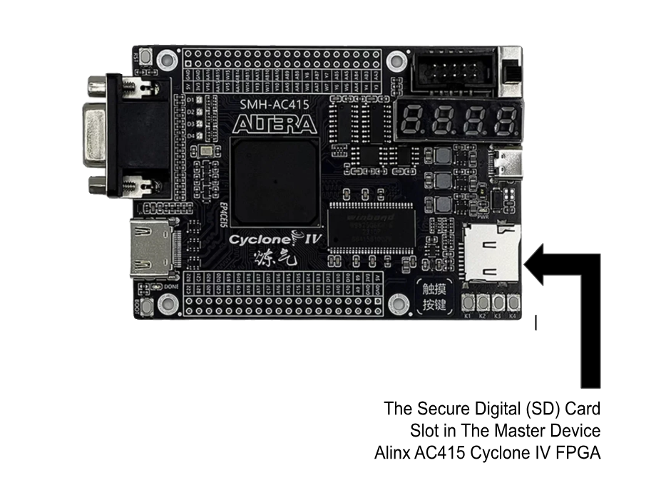
The implementation specifically utilizes a Samsung EVO 128GB SD card with A2, meaning that Application Perfomance Class 2 and V30 performance ratings, achieving sequential read speeds of 150 megabytes per second. This specific hardware selection addresses critical performance constraints that standard SD cards fail to satisfy. The A2 rating indicates optimization for random access patterns with minimum sustained random read performance of 4000 IOPS and random write performance of 2000 IOPS, dramatically exceeding the capabilities of conventional SD cards that struggle with non-sequential access. The V30 video speed class guarantees minimum sequential write speeds of 30 megabytes per second, ensuring reliable data capture during training phases. Standard SD cards available in the consumer market typically lack these performance characteristics, exhibiting severe slowdowns during random data retrieval and write operations that would bottleneck the neuronal state loading process. The 150 megabytes per second sequential read capability enables rapid brain state transfers, potentially reducing the thirty-two megabyte loading time from one second to under 250 milliseconds, significantly improving system responsiveness. Alternative implementations might incorporate solid-state drives through appropriate interface modules, offering even higher performance for scenarios requiring extremely rapid context switching between multiple learned models, though the SD card solution provides optimal balance between cost, power consumption, and sufficient performance for the primary use cases.
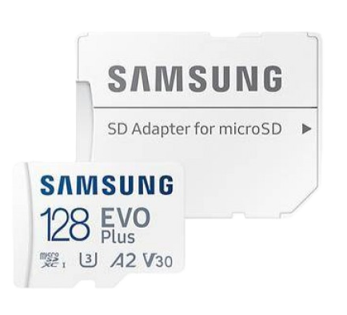
During the loading phase, the system enters what might be termed the staged loading phase where the neuronal computation core remains completely inactive. The Serial Peripheral Interface controller activates and begins sequential reading of raw sectors from the SD card without any filesystem overhead. Data streams directly into SDRAM as rapidly as the SD card interface permits, typically achieving transfer rates of twenty-five megabytes per second. For a complete thirty-two megabyte brain state, loading completes in approximately one second. During this phase, power consumption and logic element utilization focus entirely on the data transfer pathway with neuronal processing completely clock-gated to minimize unnecessary activity.
Following successful loading, the system transitions to thinking mode where roles reverse completely. The SD card interface enters a dormant state with clocks disabled and minimal power draw. The neuronal processing core activates and gains exclusive high-speed access to SDRAM operating at its maximum supported frequency. This architecture ensures that the bottleneck during neuronal computation is not SD card access speed but rather the SDRAM bandwidth and arithmetic pipeline throughput. The separation proves essential for achieving competitive performance since SD card random access latencies would catastrophically degrade neuronal update rates if weights had to be fetched from card during operation.
The protocol treating SD cards as raw block devices rather than formatted filesystems dramatically reduces implementation complexity. Rather than implementing FAT32 parsing with directory traversal and file allocation table management consuming thousands of logic elements, the simple sector reader requires merely three hundred elements. The card stores synaptic weight matrices as contiguous binary data beginning at physical sector zero. This arrangement permits the most efficient possible sequential reading patterns that maximize SD card throughput while minimizing the logic required to orchestrate the transfer.
This cartridge-based intelligence paradigm enables fascinating capabilities. Different SD cards can encode completely different learned skills or knowledge domains. One card might contain weights for English language processing while another encodes mathematical problem-solving and a third implements visual object recognition. Swapping between these capabilities requires only ejecting one card and inserting another followed by a one-second reboot cycle. The modularity extends the fifty-dollar hardware investment across unlimited application domains limited only by the number of SD cards in one's collection.
Before implementation of this architecture becomes viable, several technical prerequisites must be satisfied. The SDRAM controller must be properly integrated and verified through simulation and hardware testing to ensure reliable data transfers without corruption. The SPI module requires development and validation to confirm sector reading operates correctly across various SD card types and speed classes. The state machine coordinating mode transitions needs careful design to prevent race conditions or illegal states where both the SD interface and neuronal core attempt simultaneous SDRAM access. Each of these elements represents an engineering challenge but none presents fundamental impossibilities given the capabilities of the target hardware.
The development of the Neuronal Video Differential Codec architecture, designated as the .NVD file format, combined with high-performance Application Performance Class 2 SD card integration, enables a technological breakthrough termed Solid State Intelligence where neuronal video differential codecs and associated synaptic databases stored on the card can be transferred directly between Neuronal Processing Units. This intellectual property will be protected through closed-source codec implementation preventing unauthorized direct writes to the storage medium. The system permits users to deploy cost-effective NonPU clusters while treating the SD card as primary intelligence storage, enabling ejection of cards trained with neuronal weights from one device and effortless transfer of differential data to another system. To illustrate efficiency, consider a standard domestic CCTV setup with a 1080p camera recording approximately 45 to 50 gigabytes daily, which the NonPU compresses by approximately 50 times to occupy merely 500 to 600 megabytes, meaning monthly storage requirements reduce to roughly 18 gigabytes rather than the terabyte-scale arrays currently demanded by data centers, and with modern SD cards reaching three terabytes capacity, storing an entire year of surveillance footage on a single chip becomes feasible.
The portability of this architecture opens opportunities for Solid State Intelligence where users can acquire or produce proprietary experience data trained on their devices rather than simply deleting accumulated synaptic knowledge. A card removed from a home CCTV system could be inserted into a car multimedia player connected to a compatible NonPU architecture, immediately inheriting a full year of learned synaptic data after brief calibration. Consider a Tesla Model S utilizing Autopilot with our NonPU architecture storing synaptic weights on the high-performance memory card, or more advanced implementations utilizing hardware such as the DE10 Nano at approximately $225 featuring 110,000 logic elements and onboard DDR3 RAM capable of simulating over 11 million neurons with significantly faster memory access than standard SD cards. The primary advantage becomes evident in accident scenarios where a condemned vehicle's data need not be discarded but rather ejected via SD card and inserted into a replacement vehicle, allowing the new car to instantly inherit millions of hours of differential learned driving data that would prove extremely difficult to replicate otherwise.
Video Compression Through Sparse Event Encoding
The video compression innovation derives from recognizing that high frame rate video contains massive redundancy when consecutive frames differ minimally. Traditional compression approaches like H.264 exploit this through motion estimation and residual coding but remain fundamentally pixel-oriented. The neuromorphic approach instead encodes only change events, mirroring biological visual processing where retinal neurons respond primarily to temporal differences rather than absolute light levels. This sparse event representation dramatically reduces data volume while enabling reconstruction through learned predictive models implemented in the neuronal substrate.
H.264 Video Compression Generally Achieves around 2:1 or 50% reduction in file size.
Image Credits: https://www.networkwebcams.co.uk
Intelligent Motion Discrimination and Habituation Filtering
A critical refinement to the compression architecture addresses the fundamental challenge of distinguishing between information-bearing changes and repetitive background motion that consumes encoding resources without conveying useful content. This discrimination capability proves essential for achieving practical compression ratios on real-world video content where various types of motion coexist with profoundly different semantic importance.
Consider a scientific video from a Mars rover mission where a ninety-nine gigabyte recording captures the Martian landscape over extended observation periods. The scene contains a rotating radar antenna that spins continuously throughout the entire recording duration, creating pixel changes in its spatial region every single frame. Simultaneously, the vast majority of the landscape remains static except for a single distant rock that suddenly shifts position, potentially indicating geological activity or even hypothetical extraterrestrial intervention. The naive differential encoding approach treats both sources of change identically, allocating equal encoding resources to the repetitive radar rotation and the singular anomalous rock movement.
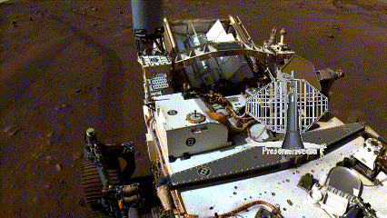
This animated visualization demonstrates a scenario where a NASA Perseverance rover captures video with a continuously rotating radar antenna mounted in a fixed camera position. Traditional encoding would wastefully store millions of redundant frames showing the identical rotation cycle. The NonPU pre-analysis phase (the analysis phase of the video and the process of breaking it down into a single .NVD file with differential data) tracks this specific pixel cluster and identifies its repetitive behavior. After observing three to four complete rotation cycles, the intelligent habituation filter recognizes the periodic pattern and stores only a single loop sequence on the high-performance SD card. During playback, the system reconstructs the continuous rotation by repeatedly displaying this stored pattern rather than decoding millions of individual frames, achieving dramatic compression efficiency while maintaining perfect visual fidelity. This approach transforms what would consume gigabytes of storage into a compact looped reference of mere kilobytes, freeing encoding resources to preserve truly novel information such as the anomalous rock movement that represents genuine scientific value.
This image has been edited and does not represent original NASA media.
This resource allocation proves catastrophically inefficient. The radar antenna generates millions of change events encoding the same cyclical motion pattern repeatedly, consuming substantial portions of the compressed file to represent information that could be summarized as a simple looping animation. Meanwhile, the critical rock movement might constitute only dozens of change events representing genuinely novel information requiring preservation. Without discrimination between these motion types, the compression ratio degrades severely while the most scientifically valuable information risks being lost among the noise of routine mechanical motion.
The solution draws direct inspiration from biological visual processing where retinal and cortical neurons exhibit adaptation to sustained stimulation. Neurons responding to constant or predictable inputs gradually reduce their firing rates through synaptic habituation mechanisms, effectively filtering out redundant information while remaining sensitive to novel stimuli. This biological principle translates directly into an engineering algorithm capable of identifying repetitive motion patterns during the pre-analysis phase and handling them through compact representation strategies rather than exhaustive change event encoding.
The habituation filtering architecture maintains a temporal history of pixel change patterns across the pre-analysis window. For each spatial region of the frame, the system tracks not merely whether changes occur but rather the temporal statistics of those changes including frequency, magnitude consistency, and periodicity. Regions exhibiting high-frequency changes with periodic structure trigger pattern recognition logic that attempts to identify the minimal repeating cycle. Once a repeating pattern is confirmed through correlation analysis across multiple periods, the region enters habituated state where individual change events cease being encoded.
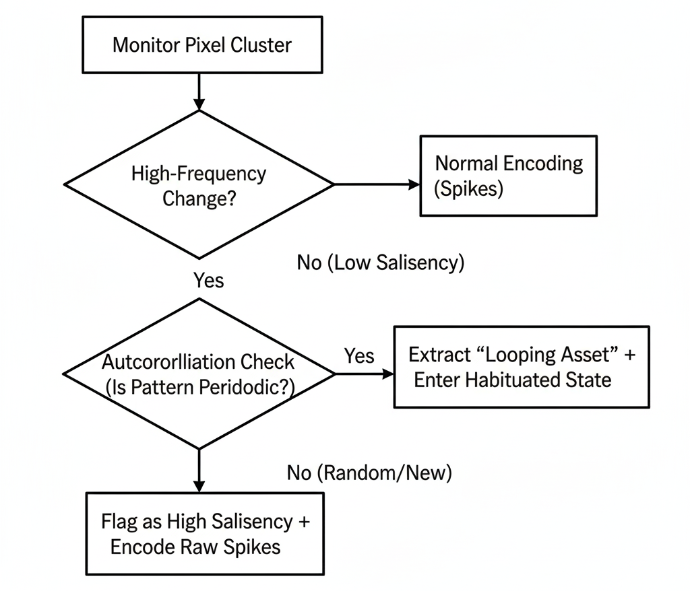
A Basic-level Algorithmic flowchart illustrating the habituation filtering logic for pixel clusters, proximity correlation analysis and cluster classification processes. The diagram demonstrates the decision tree used during the pre-analysis phase to identify repetitive patterns, evaluate spatial proximity relationships between changed pixels, and determine whether regions should be encoded through loop-based compression or full change event capture.
Instead of encoding millions of individual change events for the rotating radar, the system captures a single cycle of the motion pattern comprising perhaps ten to twenty frames showing the complete rotation sequence. This reference pattern is stored once in the compressed representation along with metadata indicating its spatial location, temporal duration, and looping behavior. During playback, the decoder simply replays this captured cycle repeatedly for the duration indicated by the timeline, perfectly reconstructing the continuous rotation while consuming minimal storage. The approach mirrors animated GIF encoding strategies but operates within the neuromorphic framework at the pixel cluster level rather than requiring manual annotation.
The discrimination between habituating patterns and information-bearing changes requires sophisticated analysis capable of distinguishing several motion categories. Repetitive periodic motion such as rotating machinery, oscillating pendulums, or reciprocating pistons exhibits strong autocorrelation at characteristic periods, enabling reliable pattern extraction and loop-based encoding. Chaotic motion such as turbulent flames, flowing water, or blowing vegetation exhibits high-frequency changes without periodicity, indicating genuine information content requiring full change event encoding despite the computational cost. Intermittent motion such as human speech where mouth movements occur against an otherwise static face represents sparse but information-critical changes that must be captured with full fidelity.
The specific example of human speech illustrates the criticality of proper motion classification. A video showing a person seated at a desk in a static room where only facial features move during speaking contains minimal overall motion. If the mouth movements are incorrectly classified as ignorable background motion, the compressed representation reduces to a single static frame showing a closed mouth, completely eliminating the speech content that constitutes the entire informational value of the recording. Conversely, correctly identifying the mouth region as exhibiting sparse but non-periodic motion ensures these changes receive encoding priority, preserving the speech information.
Similarly, consider a low-resolution video showing a rotating fan where motion blur causes the fan blades to appear as a static blur rather than distinct moving objects. In such cases, the pixel values in the fan region may exhibit minimal frame-to-frame variation despite the physical rotation. The habituation logic must recognize that these regions already appear effectively static in the source material and require no special handling. The discrimination operates on actual pixel changes rather than inferred physical motion, ensuring that perceptually static regions receive static encoding regardless of the underlying physical dynamics.
The Mars rover scenario with the distant moving rock provides the most compelling demonstration of habituation filtering value. Throughout a ninety-nine gigabyte source video spanning hours of observation, perhaps ninety-eight gigabytes encode routine mechanical motion of rover components, atmospheric effects creating subtle lighting variations, and other predictable changes. The single gigabyte or less of truly novel information includes the anomalous rock movement along with any other unexpected events such as dust devils, meteorite impacts, or instrument malfunctions. Proper habituation filtering compresses the ninety-eight gigabytes of routine motion into megabytes of loop references while preserving every change event associated with the anomalous rock, achieving compression ratios exceeding one hundred to one while maintaining perfect fidelity for scientifically critical content.
NASA's Perseverance rover carries a sophisticated imaging suite of 23 cameras capable of capturing high-definition 3D panoramas and video. However, transmitting this data back to Earth presents a massive engineering challenge. The rover relies on a multi-tiered infrastructure where the High-Gain Antenna can transmit directly at only 32 kbps, while the bulk of science data must be relayed via orbiters at speeds reaching 2 Mbps. Even with these relays, the vast interplanetary distances cause signal latencies of up to 22 minutes, meaning high-resolution datasets can take days to arrive. Furthermore, the entire system is powered by a Multi-Mission Radioisotope Thermoelectric Generator that provides approximately 110 watts. Since science activities can spike power demand to 900 watts, data transmission must be carefully scheduled to preserve the lithium-ion battery reserves.
This high scarcity of bandwidth and energy shows why efficient and event-driven compression is critical for future exploration.
The primary challenge in interplanetary exploration is transmitting high-value video data over limited bandwidth. The NonPU architecture addresses this by distinguishing between predictable mechanical motion and genuine scientific anomalies. In this system, an anomaly is defined as a sudden, non-periodic change within a specific pixel cluster, such as a geological shift or a dust devil. The habituation filter identifies repetitive behaviors like a rotating radar antenna and encodes them as a simple loop, rather than transmitting every frame. This allows the system to dedicate its processing power and bandwidth to the irregular pixel clusters that represent new discoveries, ensuring that critical scientific data reaches Earth without data loss.
Image Credit: NASA , NASA JPL and JPL Caltech
Implementation of habituation filtering occurs entirely during the offline pre-analysis phase where computational time constraints relax sufficiently to permit multi-pass analysis. The first pass performs standard differential analysis identifying all changed regions and accumulating statistics on change frequency and magnitude. The second pass performs autocorrelation analysis on high-frequency change regions to identify periodic patterns and extract minimal repeating cycles. The third pass validates identified patterns through cross-correlation with subsequent occurrences, confirming repeatability and establishing confidence in the loop representation. Final passes optimize the encoding by selecting between loop-based representation for habituated regions and sparse event encoding for non-repeating changes based on storage efficiency calculations.
The saliency mapping concept provides the data structure organizing this analysis. Each spatial region maintains a saliency score reflecting its information content relative to encoding cost. Static regions receive minimal saliency since they require only key frame storage. Regions with sparse non-periodic changes receive high saliency since they likely represent important events. Regions with dense periodic changes receive negative saliency indicating they should be suppressed through loop encoding rather than exhaustive change tracking. The final compressed representation allocates encoding resources proportionally to saliency, ensuring maximum information preservation per bit stored.
This 3D surface shows how the system decides where to spend encoding resources across a video frame. The height represents how much attention each region deserves. Peaks rising upward mark areas with unpredictable changes like flickering flames or a person talking where every frame matters and must be fully captured. The flat middle section represents static background that stays the same and consumes a very low data to store. The funnel dropping below zero shows repeating motion like a spinning fan or a clock pendulum where the system recognizes the pattern after a few cycles and simply stores one loop instead of recording the same motion thousands of times. In practice, the encoder focuses its storage budget on the peaks while the valleys get compressed into tiny loop references.
The light remains solid Red for the majority of the duration, representing a static state. It then abruptly switches diffused state. This visualization demonstrates Sparse Event logic, where data is only transmitted during the state change, unlike continuous video streaming which would retransmit every red pixel data 60 times per second.
Threshold selection for habituation triggers requires empirical optimization across diverse content types. Setting thresholds too aggressively risks misclassifying informative chaotic motion as repetitive patterns, introducing compression artifacts through inappropriate loop-based encoding. Setting thresholds too conservatively fails to achieve compression benefits on content with substantial repetitive motion, limiting practical compression ratios. Adaptive thresholding based on global statistics of the video content provides a middle path where the habituation sensitivity adjusts to match the overall motion characteristics, becoming more aggressive on content dominated by mechanical motion while remaining conservative on content with primarily organic or chaotic dynamics.
The flame example illustrates the chaotic motion category requiring special handling. When encoding video of a lit match, the flame exhibits continuous high-frequency pixel changes as combustion dynamics create turbulent flow patterns, color variations, and intensity fluctuations. However, unlike a rotating radar, flame motion never repeats the same pattern twice. Autocorrelation analysis reveals no significant peaks at any lag period, indicating absence of periodicity. This signature identifies the region as containing genuine information despite the high change rate, triggering full sparse event encoding rather than habituation. The resulting compressed representation captures every flame variation, preserving scientifically valuable information about combustion color, intensity evolution, and any anomalies in the burning process.
A chemistry experiment flame where every flicker is unique. The system checks for repeating patterns for the checking time (total video frams "N" / frame rate (R) * 3.4) but finds none because fire never moves the same way twice. This tells the encoder to capture every single frame change instead of trying to compress it into a loop.
User control over habituation filtering provides flexibility for diverse application requirements. A configuration option enables users to disable habituation filtering entirely, forcing the system to encode all detected changes regardless of periodicity. This mode suits scenarios where even repetitive motion carries scientific value or where verification of continuous mechanical operation is required. The default configuration enables habituation filtering with moderate thresholds optimized for general content. Advanced configurations expose threshold parameters for expert users requiring fine-grained control over the habituation sensitivity and pattern recognition confidence levels.
The interaction between habituation filtering and reconstruction quality merits careful consideration. Loop-based encoding of repetitive motion introduces quantization of the loop period to match the frame timing, potentially creating subtle phase discontinuities if the actual period does not precisely align with frame boundaries. Similarly, variations in the repetitive motion such as gradual speed changes in a rotating element may not be captured if the habituation logic assumes perfect periodicity. These effects typically prove imperceptible for mechanical motion but could become noticeable in edge cases, requiring validation against quality metrics during the development phase.
Future enhancements to the habituation architecture could incorporate machine learning techniques for motion classification, training neuronal networks to recognize semantic motion categories such as human gestures, mechanical rotation, fluid dynamics, and atmospheric effects. This semantic understanding would enable more sophisticated encoding strategies tailored to specific motion types, potentially achieving even higher compression ratios while maintaining quality for perceptually important content. However, the current correlation-based approach provides a solid foundation requiring no training data and operating reliably across arbitrary content domains.
The proximity correlation hypothesis provides the theoretical foundation for the compression scheme. When analyzing frame sequences, pixel changes cluster spatially and temporally rather than distributing randomly across the image. A person's mouth moving during speech creates a localized region of change while the background remains static. This clustering permits efficient encoding where instead of tracking every changed pixel individually, the system identifies cluster centers and stores compact representations of regions undergoing modification. The trade-off between individual pixel precision and clustered approximation can be tuned based on the specific characteristics of the video content and acceptable reconstruction quality.
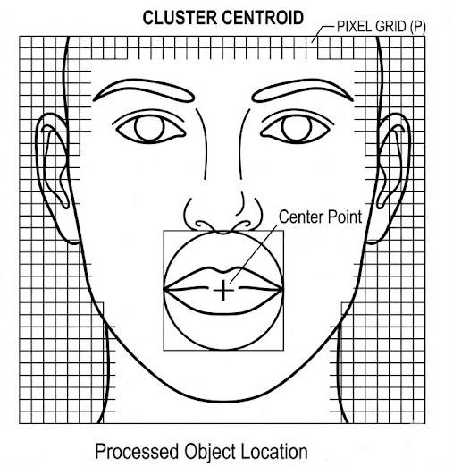
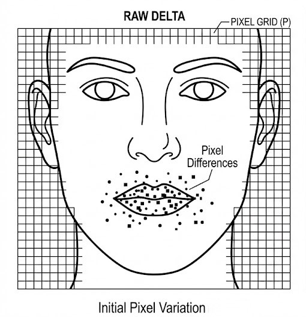
Proximity Correlation Hypothesis. There is a wireframe face showing hundreds of individual pixel changes around the mouth area, representing raw, inefficient data. and the same wireframe showing a single bounding circle and center point or the centroid in codebase, around the mouth, representing the compressed Pixel Cluster representation. This demonstrates how the algorithm reduces hundreds of data points into a single coordinate event.
Two distinct approaches to change detection present themselves with different computational and storage implications. The first approach maps each individual changed pixel, storing its spatial coordinates and new value in the compressed representation. This method maximizes reconstruction fidelity since every change is precisely recorded, but requires more storage space and more complex indexing structures to locate the scattered change pixels efficiently. The second approach identifies cluster centers where pixel changes concentrate and stores these centers along with radius and magnitude parameters describing the extent of modification. This compressed representation requires less storage and simpler indexing at the cost of introducing approximation errors in regions between cluster centers.
The selection between these approaches depends on empirical analysis of specific video content. For high-motion scenes with scattered changes, individual pixel tracking may prove more efficient. For content with localized activity regions like talking head videos, cluster-based encoding likely dominates. The system can potentially adapt its strategy dynamically based on analyzing the spatial distribution of changes in each frame, selecting the representation that minimizes storage while maintaining quality targets. When cluster encoding is selected, the system computes a radius for each event circle using a formula where the cluster radius equals a proximity coefficient multiplied by the square root of the average squared distance between each changed pixel and the cluster centroid. The proximity coefficient lambda typically ranges between 1.5 and 2.5, controlling how aggressively the approximation captures outlier pixels. A higher lambda value produces larger circles that capture edge pixels but may cause overlap between adjacent clusters, while a lower value yields tighter circles with greater precision at the risk of missing peripheral changes. The centroid itself is calculated as the average position of all changed pixels assigned to that cluster, and the squared distance term measures how far each pixel sits from this center of gravity. This adaptive capability represents an area for future research and optimization.
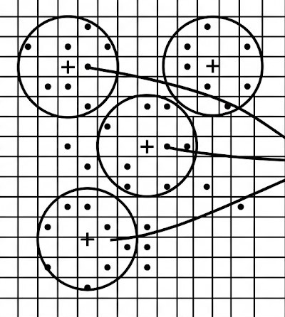
Discrete mapping tracks every pixel, maximizing fidelity but increasing the data size but as in the Figure, Cluster encoding groups changes into image regions defined by a centroid and its calculated radius. This method approximates the event rather than the pixels, reducing storage requirements by high margin.
Key frame selection addresses the fundamental challenge that sparse change encoding requires reference frames from which changes are measured. If only differences are stored, reconstruction becomes impossible without knowing at least some complete frames. The solution identifies frames where the total magnitude of change exceeds some threshold percentage of the total image, indicating a scene transition or major content shift. These frames are stored completely in the compressed representation, serving as reference points for the sparse encoding of subsequent frames until the next key frame. The balance between key frame frequency and compression ratio requires careful tuning since more frequent key frames improve reconstruction quality but reduce compression efficiency.
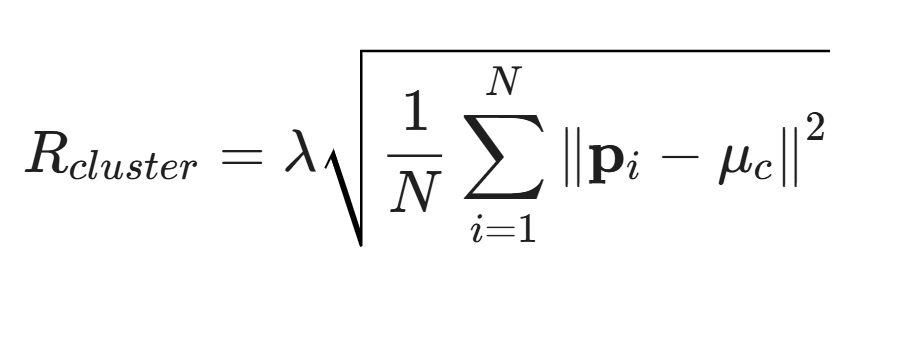
The cluster radius equation. This computes the standard deviation of pixel positions and scales it by the proximity coefficient to produce a circle enclosing the changed pixels.
The encoding process operates offline over extended time periods, accepting hours of computation to achieve optimal compression. A one-hour source video might require twenty to forty-eight hours of processing depending on content complexity and hardware resources. This timing mirrors biological memory consolidation during sleep where experiences undergo extensive replay and reorganization for efficient long-term storage. The extended processing enables sophisticated analysis finding optimal cluster placements and minimizing the total information content of the compressed representation. Once encoding completes, the resulting neuromorphic file enables real-time playback at sixty frames per second through hardware-accelerated neural reconstruction.
Encoder Implementation Workflow
The encoding workflow begins with video ingest where source content transfers from external storage into the FPGA processing environment. For initial development and testing, transmission occurs via UART serial connection from a host computer, with the PC reading the source video file and streaming pixel data sequentially to the FPGA. This approach avoids the complexity of implementing video capture hardware while enabling controlled testing with known reference content. The transmission rate need not match real-time video rates since encoding operates offline with quality prioritized over speed.
As pixels arrive at the master board, they enter the differential analysis pipeline where current pixels compare against corresponding pixels from the previous frame retrieved from SDRAM. The master board transmits both pixel values to slave boards configured as difference computation engines. The slave boards execute simple subtraction operations and return magnitude results indicating the degree of change. When these difference values exceed predetermined thresholds, the system recognizes significant change events worthy of inclusion in the compressed representation.
The master board maintains responsibility for constructing the compressed representation in the SD card. Each significant change event generates a data packet encoding the temporal position, spatial location, and magnitude of modification. These packets accumulate in the SD card storage organized sequentially to permit efficient sequential reading during playback. The packet format balances compactness against ease of parsing, with fixed-size fields enabling rapid seeking to specific temporal positions without requiring variable-length record handling.
Key frame detection operates through accumulation of total change magnitude across each complete frame. A running counter increments as each pixel difference is computed and thresholded. When the frame completes, the system compares the total accumulated change against a threshold representing some percentage of the full frame size. If total change exceeds this threshold, the system designates the frame as a key frame requiring complete storage. The complete frame data is serialized and written to the SD card with appropriate markers indicating its role as a reference frame rather than a sparse differential packet.
The temporal extent of processing may span many hours or even days for complex video content. This extended timeline is not a deficiency but rather enables the sophisticated analysis necessary for optimal compression. During this period, the system can perform multiple passes over the source material if beneficial, first identifying key frames and then optimizing the differential encoding between them. The biological analogy to memory consolidation during sleep proves apt since the process reorganizes information for efficient storage and subsequent rapid recall.
Storage organization in the SD card follows a simple linear layout optimized for sequential access during playback. The file begins with a header encoding metadata such as frame dimensions, frame rate, total duration, and the positions of key frames. Following the header, the data packets and key frames appear in strict temporal order. This organization permits a streaming decoder to simply read forward through the file, applying each change event or key frame as it appears without requiring random access or complex seeking operations. The simplicity of the storage format reduces decoder logic complexity while maximizing throughput.
Decoder and Real-Time Reconstruction
The decoder architecture implements real-time video reconstruction from the sparse event representation through neuronal network-based prediction. Upon system boot with a compressed neuromorphic file loaded into memory, the decoder initializes by loading the first key frame into the frame buffer and preparing the neuronal networks for predictive computation. The neuronal weights have been pre-trained during encoding to understand the statistical structure of the video content, enabling accurate prediction of intermediate pixel values between key frames based on local context.
Playback proceeds by streaming through the compressed representation chronologically. Each change event packet is parsed to extract its temporal position, spatial location, and modification parameters. The neuronal substrate generates predictions for pixel values in regions not explicitly specified by change events, drawing upon patterns learned during encoding. These predictions fill in the spaces between known values, reconstructing a complete frame from the sparse representation. The predicted frame is written to SDRAM frame buffer and subsequently transmitted through video output pathways to display hardware.
The critical performance requirement is maintaining real-time frame rates of sixty frames per second to ensure smooth playback without visible stuttering. This demands that the reconstruction pipeline completes all processing for each frame within approximately sixteen milliseconds. The hardware architecture achieves this through parallelization where multiple neuronal computation pipelines operate simultaneously on different regions of the frame. The high bandwidth of SDRAM memory enables rapid reading of change event data and writing of reconstructed frames without bottlenecking the processing flow.
One fascinating capability emerges from the neuronal plasticity mechanisms that can remain active during playback. When a particular video is accessed frequently, the neuronal weights adapt to represent that specific content with increasing efficiency. The network essentially memorizes frequently accessed videos, enabling faster reconstruction and potentially higher quality playback for popular content. This neuronal caching effect provides automatic optimization without requiring explicit cache management logic, as the biological learning mechanisms naturally strengthen representations of repeatedly encountered patterns.
The video output stages transform the reconstructed frame buffer data into standard display signals. For VGA output, the resistor ladder Digital-to-Analog converter translates digital RGB values into analog voltage levels appropriate for legacy displays. Horizontal and vertical sync pulses are generated with precise timing to comply with standard video modes, typically 640x480 at sixty hertz refresh. The HDMI output employs dedicated transmitter chips to serialize the parallel pixel data into high-speed differential signals conforming to HDMI protocol specifications. Both outputs can operate simultaneously if desired, enabling mirrored display on multiple monitors.
Quality assessment of the reconstructed video requires comparison against the source material to quantify compression artifacts and information loss. Metrics such as peak signal-to-noise ratio and structural similarity index provide objective measures of reconstruction fidelity. The compression ratio is simply the original file size divided by the compressed representation size, with target ratios exceeding fifty-to-one for high frame rate source material with significant temporal redundancy. The balance between compression ratio and quality can be adjusted through threshold parameters controlling event sparsity and key frame frequency.
Million Neuron Simulation Architecture
The question of whether the fifty-dollar hardware platform can simulate one million biological neurons initially appears absurd given the finite logic resources of the FPGA. However, careful analysis of computational requirements reveals this capability as not merely possible but practically achievable through time-multiplexed processing. The key insight recognizes that neuron count and logic element count address different aspects of the simulation, with state storage capacity and update frequency as the actual constraints.
Each Izhikevich neuron requires storage for two sixteen-bit state variables representing voltage and recovery. This totals four bytes per neuron. One million neurons therefore require four megabytes of state storage, well within the thirty-two megabyte capacity of the onboard SDRAM with twenty-eight megabytes remaining for synaptic weights and frame buffers. The memory constraint thus poses no barrier to million-neuron simulations.
The logic constraint similarly proves surmountable through pipelining. A single arithmetic pipeline implementing the Izhikevich update equations can process any number of neurons sequentially by loading state from memory, executing the computation, and writing updated state back. The logic element count required for one such pipeline approximates two thousand elements, leaving over thirteen thousand elements available for control logic, memory interfaces, and caching structures. The number of neurons simulated depends not on replicating the pipeline but on how many times it can iterate through the neural population per unit time.
The update frequency calculation demonstrates feasibility. Assuming ten clock cycles per neuron including memory access latency, one million neurons require ten million cycles per complete update. At fifty megahertz clock frequency, this permits five complete updates per second. While biological cortex operates in the thirty to eighty hertz gamma rhythm range, the five hertz update rate achieved on budget hardware remains remarkable and sufficient for many neuromorphic computing applications. The simulation runs in slow motion relative to biology but captures the essential dynamics.
Optimization opportunities exist to improve update rates. Increasing parallelism through multiple arithmetic pipelines operating simultaneously can multiply throughput at the cost of additional logic elements. Eight parallel pipelines would achieve forty hertz update rates, approaching biological speeds. Careful memory interface optimization through burst reading and write buffering can reduce the cycles per neuron below ten. Operating the SDRAM at its maximum supported frequency rather than conservative settings increases memory throughput. These refinements can potentially achieve biological-timescale simulation with further engineering effort.
The synaptic connectivity challenge proves more severe than neuron state storage. One million neurons in a fully connected topology would require one trillion synaptic weights, vastly exceeding available storage. Even sparse connectivity with one hundred connections per neuron yields one hundred million synapses requiring two hundred megabytes of storage when using two bytes per weight. This exceeds SDRAM capacity and necessitates streaming weights from SD card or employing compressed connectivity rules such as small-world network topologies defined algorithmically rather than stored explicitly.
The mega pipeline architecture addresses these challenges through hierarchical memory organization. The SDRAM controller performs burst reads fetching batches of two hundred fifty-six neurons at once into cache implemented in the FPGA's embedded M9K memory blocks. The cache provides ultra-fast access for the computation core while the SDRAM controller prefetches the next batch in parallel. Eight parallel arithmetic pipelines process neurons from the cache simultaneously, maximizing utilization of the available logic resources. This organization balances memory bandwidth, computation throughput, and storage capacity to achieve million-neuron simulation on budget hardware.
Business Model and Commercialization Strategy
The technology foundation enables multiple commercialization pathways addressing different market segments with distinct value propositions. The dual-track strategy pursues both cloud-based services targeting content creators and hardware products serving enterprise customers requiring dedicated neuromorphic computing capacity. This diversification reduces market risk while maximizing the addressable opportunity space.
The cloud service model constructs a home data center architecture where multiple FPGA boards operate as a processing farm handling video compression jobs submitted by remote users. A web-based interface provides upload functionality where users drag source videos into their browser for processing. The videos enter a queue managed by job scheduling software that dispatches work to available FPGA boards. Processing proceeds offline over hours or days, after which users receive links to access their compressed videos through streaming playback.
The key innovation protecting intellectual property in the cloud model is that users never receive the compressed neuromorphic files directly. Instead, they obtain streaming links that trigger real-time decoding on the server infrastructure with the resulting video stream transmitted via WebRTC protocol to the viewer's browser. This view-only access prevents reverse engineering of the compression format while enabling convenient sharing. The compressed representations remain secured in the service provider's storage, creating a platform lock-in effect where users depend on the service for accessing their content.
Revenue generation from the cloud service can follow subscription tiers or pay-per-encode pricing. Subscription plans might offer monthly compression quotas with overage charges, while pay-per-encode charges based on source video duration and quality settings. Additional revenue opportunities include storage fees for hosting compressed videos long-term and premium features such as priority processing or enhanced quality modes. The viral video caching capability where frequently accessed content loads into neural weights for instant playback provides a unique value proposition justifying premium pricing tiers.
The hardware product addresses enterprise customers requiring on-premises neuromorphic computing infrastructure. The form factor is a standard one or two rack unit server blade fitting conventional data center racks. Inside the chassis, a custom backplane holds thirty-two to sixty-four vertical FPGA cards operating in parallel. Connectivity through PCIe or hundred gigabit Ethernet interfaces the blade to data center networks. The passive cooling requirements due to the low power consumption of spiking neuronal networks provide a significant advantage over GPU-based solutions requiring aggressive active cooling.
Marketing the hardware emphasizes energy efficiency, thermal characteristics, and massive parallelism. The comparison to GPU power consumption highlights that dozens of FPGA boards operate within the power budget of a single high-end GPU. The cool operation reduces cooling infrastructure costs and improves reliability through lower thermal stress. The biological-scale neuron counts achievable through parallel boards reach millions or tens of millions of neurons, addressing applications in brain simulation and neuromorphic algorithm research.
The sales strategy positions the technology as enabling rather than competitive. Rather than directly challenging established GPU manufacturers, the approach targets applications where neuromorphic computing provides unique advantages. This includes ultra-low-power inference for edge deployment, event-driven processing for sensor data, and exploration of brain-inspired algorithms. The licensing model provides recurring revenue while hardware sales generate margin and establish installed base.
Intellectual property protection relies on several mechanisms. The neuromorphic file format remains proprietary and undocumented, forcing anyone attempting interoperability to reverse engineer the encoding scheme. The synaptic weight organization and neuronal network architectures are trade secrets not disclosed in marketing materials. Hardware locking ties the decoder implementation to specific FPGA configurations, preventing software emulation on standard processors. These layers create a defensible competitive moat while the technology matures.
Technical Prerequisites and Development Phases
Before the complete system becomes operational, several engineering prerequisites must be satisfied through systematic development. The first phase focuses on establishing fundamental hardware functionality and verifying that individual components operate correctly in isolation. This includes confirming FPGA programming and configuration works reliably, testing video output through VGA and HDMI interfaces displays correct patterns, and validating that SDRAM reads and writes execute without errors.
The superneuron module requires implementation and testing to verify that the finite state machine transitions correctly between operational modes, homeostatic gain control maintains activity within target ranges, and synchrony detection identifies pattern recognition events accurately. Extensive simulation in ModelSim or similar verification tools confirms logic correctness before committing to hardware testing. Test benches stimulate the module with various input patterns observing that outputs match expected behaviors across state transitions and edge cases.
The SD card interface development involves writing the SPI controller and sector reading logic, then validating operation with actual SD cards of various types and capacities. The raw sector access approach must be verified to ensure reliable data reading without filesystem dependencies. Integration testing confirms that data read from SD card matches what was written, establishing baseline reliability before attempting neuronal weight loading. The dual-mode architecture requires careful state machine development to prevent race conditions between loading and inference phases.
The SDRAM controller integration represents a critical path item given its central role in system operation. The Alinx-provided intellectual property cores or reference designs must be adapted to the specific project requirements including burst access patterns optimized for neuronal state retrieval and efficient frame buffer updates for video processing. Memory timing verification through oscilloscope observation confirms that setup and hold times meet specifications across process, voltage, and temperature variations.
Neuron pipeline implementation and verification follows iterative refinement where simple single-neuron implementations expand to multi-neuron time-multiplexed architectures. Fixed-point arithmetic implementations require careful bit-width and scaling analysis to prevent overflow while maintaining adequate precision. Comparison against floating-point reference implementations in Python or MATLAB establishes correctness benchmarks. Performance profiling identifies bottlenecks and optimization opportunities to maximize neuron update rates.
The encoder development requires implementing the pixel ingest pathway, difference computation logic, threshold-based event detection, and SD card packet writing mechanisms. Initial testing uses synthetic test patterns with known properties before progressing to real video content. Verification involves encoding simple sequences and manually inspecting the compressed representation to confirm that change events align with expected pixel differences. Compression ratio measurements establish baseline performance and guide optimization efforts.
Decoder implementation builds upon the encoder verification by attempting reconstruction of the compressed representations. Early testing focuses on key frame reconstruction before adding predictive pixel generation through neuronal networks. Real-time performance profiling identifies whether sixty frame per second targets are achievable or whether optimization is required. Quality metrics compare reconstructed frames against originals, quantifying information loss and guiding quality improvement efforts.
Master-slave communication protocols require hardware testing with actual boards rather than simulation alone. Signal integrity verification through oscilloscope probing confirms that high-speed bus signals maintain adequate margins for reliable data transfer. Protocol testing under various load conditions establishes robustness against timing variations and environmental factors. Performance measurements quantify the throughput improvements achieved through parallel slave computation.
Scaling and Performance Optimization
The initial single-board implementation establishes proof of concept but leaves substantial performance headroom exploitable through scaling strategies. Adding slave boards provides the most straightforward scaling path, with each additional slave increasing the parallelism of difference computations during encoding. Six slave boards could potentially accelerate encoding by factors approaching six times if bus bandwidth and master coordination overhead remain manageable.
Frequency optimization explores whether clock speeds can be increased beyond the conservative fifty megahertz baseline. FPGA timing analysis tools identify critical paths that limit maximum frequency, and logic restructuring or pipelining can potentially raise operating frequencies. Memory interfaces often support higher data rates than default configurations, and tuning SDRAM controller parameters can increase throughput. Doubling clock frequency directly doubles neuron update rates, potentially achieving ten hertz operation for million-neuron simulations.
Logic element utilization analysis guides resource allocation decisions. Current designs may leave significant logic capacity unused, permitting instantiation of additional arithmetic pipelines for parallel neuron processing. Profiling tools identify which modules consume the most resources and whether alternative implementations could reduce footprint. The balance between logic, memory, and bandwidth constraints shifts as the design matures, and continuous optimization ensures efficient resource usage.
Memory bandwidth optimization examines whether burst access patterns, prefetching strategies, or cache organizations can increase effective throughput. SDRAM controllers support various burst lengths and addressing modes with different performance characteristics. Matching burst patterns to access patterns in neuronal computation reduces overhead from row activation and precharge cycles. Double buffering techniques permit computation on one frame buffer while displaying another, improving utilization.
Compression quality tuning adjusts threshold parameters controlling event sparsity and key frame frequency to explore the trade-off space between file size and reconstruction fidelity. Lower thresholds capture more subtle changes improving quality but reducing compression ratio. Higher thresholds increase compression but introduce more prediction burden on neuronal networks. Automated parameter sweeps over test video corpus identify optimal settings for various content types.
Validation and Demonstration
Successful project validation requires demonstrating key capabilities through concrete measurements and observable demonstrations. The first milestone involves displaying a single neuron's activity on an oscilloscope or HDMI output, confirming that the basic neuronal computation machinery functions correctly. This blinking neuron demonstration proves that spike generation occurs and that the hardware pipeline executes.
Video compression demonstrations require encoding a test sequence, measuring the compression ratio, and playing back the reconstructed video to assess quality. A ten-second test video provides a manageable scope for initial validation while capturing enough content to evaluate performance. Comparison between source and reconstructed frames through side-by-side display reveals compression artifacts and confirms basic functionality. Achieving twenty-to-one compression ratio on initial attempts would validate the core approach.
The million-neuron simulation milestone demonstrates the scalability of the time-multiplexed architecture. Running the system with one million neurons updating at five hertz for sustained periods confirms memory capacity, computational throughput, and stability. Activity monitoring verifies that homeostatic control maintains appropriate firing rates without runaway excitation or quiescence. This demonstration proves the biological-scale computing claim.
Performance benchmarking against GPU implementations provides competitive context. Measuring power consumption during video decoding and comparing against equivalent GPU-based playback quantifies energy efficiency advantages. Thermal imaging confirms low heat generation relative to conventional processors. Latency measurements from compressed representation loading to playback startup establish responsiveness. These comparisons validate the commercial positioning.
Real-world content testing moves beyond synthetic test patterns to actual video material such as Mars rover footage, conference presentations, or cinematic content. This reveals how compression performance varies across content types and identifies challenging scenarios requiring algorithm refinement. User testing with potential customers gathers feedback on quality acceptability and feature requirements. This grounds the technology in practical applications rather than laboratory demonstrations.
Future Development and Research Directions
The current architecture establishes a foundation permitting numerous future enhancements addressing current limitations and expanding capabilities. Real-time encoding represents a major opportunity where the current offline processing model could evolve toward live camera input compression with minimal latency. This requires architectural refinements enabling parallel encoding and prediction, potentially through hierarchical master architectures where multiple boards collaborate on different spatial or temporal regions.
Spike-timing-dependent plasticity implementation would enable true online learning where synaptic weights adapt continuously during operation rather than freezing after offline training. This capability permits the system to refine its models based on actual usage patterns and new content characteristics. The challenge lies in implementing STDP efficiently in hardware while maintaining stable network dynamics, requiring careful parameter tuning and potentially novel learning rules.
Advanced compression techniques could exploit deeper neuronal network architectures, attention mechanisms, or generative models for improved prediction quality. Current implementations use relatively simple networks constrained by FPGA resource limits, but larger hardware or more sophisticated algorithms could push quality-to-compression ratios significantly beyond initial targets. Research into neuromorphic image processing from vision neuroscience may inspire biological algorithms with superior efficiency.
Multi-board orchestration at scale would enable data center deployments with hundreds of FPGA cards operating in concert. This requires developing robust communication protocols, distributed job scheduling, load balancing, and fault tolerance mechanisms. The hierarchical organization might involve master boards coordinating clusters of slave boards, with higher-level controllers managing the masters. This mirrors biological nervous system organization with hierarchical control structures.
Application domain expansion explores uses beyond video compression including real-time sensor processing, robotic control, scientific simulation, and edge AI deployment. Each domain presents unique requirements and optimization opportunities. The reconfigurable nature of FPGAs permits tailoring the architecture to specific applications while maintaining a common core technology base. This flexibility enables a platform approach where a common hardware foundation supports diverse applications through different firmware configurations.
Conclusion
The Neuronal Processing Unit project demonstrates that commodity FPGA hardware can implement biological-scale neuronal simulations achieving competitive performance with traditional computing architectures through careful attention to neuromorphic principles. The fifty-dollar development board provides sufficient logic, memory, and bandwidth resources to simulate one million neurons when properly architected through time-multiplexed computation and hierarchical memory organization. The video compression application showcases how brain-inspired sparse event encoding dramatically reduces data volume while maintaining reconstruction quality through learned predictive models.
The dual-mode architecture separating learning from inference proves essential for achieving practical performance by permitting offline optimization during encoding while enabling real-time operation during playback. The SD card based intelligence cartridge concept provides modularity and expandability, treating learned skills as swappable modules rather than monolithic firmware. The master-slave computational distribution demonstrates scalable parallelism without requiring complex network protocols or operating system overhead.
Commercial viability emerges through dual revenue streams addressing different market segments. The cloud service model monetizes the technology through subscription and usage-based pricing while protecting intellectual property through view-only access controls. The hardware product targets enterprise customers requiring dedicated neuromorphic infrastructure, emphasizing energy efficiency and biological-scale computing capacity. Together, these approaches provide multiple paths to market success.
The engineering challenges ahead remain substantial but surmountable given the demonstrated feasibility of core concepts. SDRAM controller integration, SD card interfacing, neuronal pipeline optimization, and encoder-decoder development each require dedicated effort but build upon well-understood hardware design principles. The systematic development phases outlined provide a roadmap from proof of concept through commercial deployment.
The Cyclone V FPGA consists of 110,000 logic elements and 41,500 adaptive logic modules (ALMs), with 5.57 megabits (5570 kilobits) of embedded memory. The board offers 1GB DDR3 SDRAM, which is very fast compared to the SD card approach. While this architecture could be implemented on the DE10 Nano in the future, the ALINX AC415 board was chosen for this project due to its unique advantages of relatively low pricing, ability to create several NonPU units and integrated HDMI and VGA modules, eliminating the need for more than 10 of external hardware components.
This work represents a convergence of neuromorphic computing, video compression, commodity FPGA development, and energy-efficient hardware design. By recognizing that biological neuronal computation principles can be efficiently implemented in digital hardware and applied to practical engineering problems, the project demonstrates a path toward democratizing neuromorphic computing. The vision of biological supercomputing on every desk becomes achievable when expensive custom silicon is replaced by inexpensive development boards running carefully architected firmware exploiting the unique advantages of spiking neuronal networks and event-driven computation. The engineering effort to realize this vision proceeds from the foundation established through this architectural specification.
Footnotes
1: The term Solid State Intelligence can be broadly referred to as Solid State Artificial Intelligence, representing a novel approach currently under development within this project. Given the circumstances of the implementation phase and the architectural foundations described throughout this document, the trajectory of development clearly points toward realizing this paradigm where learned synaptic knowledge persists on solid-state storage media and transfers seamlessly between compatible NonPU architectures. Further information regarding Solid State Intelligence will be made available following the successful implementation and validation of the first prototype, the NonPU Instant Video Processor and Video Codec.
References
[1] E. M. Izhikevich, "Simple model of spiking neurons," in IEEE Transactions on Neural Networks, vol. 14, no. 6, pp. 1569-1572, Nov. 2003.
Comparison with Past Neuromorphic Innovations
Intel's Loihi and Loihi 2 represent the current state of industrial neuromorphic computing research. Loihi 2, announced in 2021, contains 128 neuromorphic cores each supporting up to 8,192 neurons through time-multiplexing as described earlier. The chip integrates approximately 2.3 billion transistors and implements sophisticated learning rules including spike-timing-dependent plasticity directly in hardware.
This project does not attempt to compete with Loihi at the scale or sophistication level. Loihi 2 is a custom ASIC designed by a team of specialized engineers with access to advanced fabrication processes. This implementation runs on a commodity development board costing approximately 50 dollars.
The value lies in demonstrating that core neuromorphic principles scale down to minimal hardware. Time-multiplexed spiking neurons, event-driven computation, and attractor dynamics can be implemented from first principles on constrained FPGAs. This validates the fundamental architecture and provides a platform for education and experimentation.
IBM's TrueNorth chip, released in 2014, takes a different architectural approach using fully parallel neurons rather than time-multiplexing. TrueNorth contains 4,096 neuromorphic cores with 256 neurons per core, giving 1 million neurons total implemented in parallel hardware. This enables extremely low latency but requires a massive silicon area of 4.3 square centimeters in 28 nanometer technology.
BrainScaleS, developed at Heidelberg University, uses analog circuits to simulate neuron dynamics up to 10,000 times faster than biological real-time. This accelerated simulation enables rapid exploration of network configurations but requires careful calibration and suffers from parameter variability inherent in analog circuits.
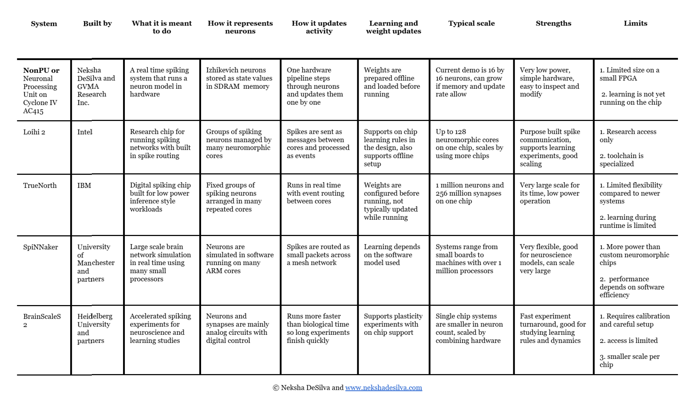
Figure 14: Comparison table of neuromorphic systems including NonPU, Intel Loihi, Loihi 2, SpiNNaker and IBM TrueNorth
This implementation occupies a different niche in the design space. Operating at biological real-time with modest neuron counts and demonstrable attractor dynamics on accessible hardware, it serves as an educational platform and proof of concept rather than a performance-competitive neuromorphic processor.
Limitations and Known Issues Currently Being Solved
Several limitations and simplifications exist in the current implementation that warrant explicit acknowledgment. The network uses only excitatory connections. Biological cortex contains approximately 20 percent inhibitory interneurons that shape network dynamics through precisely timed suppression. Adding inhibitory neurons would improve stability and enable more complex computational patterns but would require additional logic resources and more sophisticated weight matrix structure.
Synaptic plasticity occurs offline. The weights are pre-calculated and loaded into memory before network operation. True neuromorphic systems implement spike-timing-dependent plasticity in hardware, allowing weights to adapt continuously based on observed spike patterns. The current architecture includes placeholder logic for STDP computation but this remains unimplemented pending future development.
The pattern completion task uses only a single learned pattern. Testing with multiple stored patterns would reveal capacity limits and interference effects inherent in attractor network dynamics. Preliminary testing with two patterns shows successful retrieval but with reduced robustness compared to single-pattern operation.
Timing closure at higher clock frequencies is expected to be challenging. The initial design target is 100 megahertz operation, but early synthesis reports and back-of-the-envelope path estimates suggest that critical paths in the multiplier chain will likely exceed 10 nanoseconds without additional pipelining. For this reason, the current NonPU design is scoped around a more conservative 50 megahertz clock, which should be attainable once the full top-level build compiles cleanly. Further pipeline optimization and restructuring of the arithmetic datapaths may allow higher operating frequencies in future revisions.
The VGA output provides only binary visualization. Adding grayscale rendering based on membrane voltage or firing rate would give more informative feedback about network state but would require additional video memory and more complex rendering logic.
All experimental results presented throughout this document derive from module-level simulation in ModelSim and Quartus rather than physical hardware measurements. The Izhikevich neuron dynamics, synaptic weight accumulation, homeostatic gain control, and pattern completion behavior have been verified through comprehensive test benches that exercise boundary conditions and typical operating scenarios. These simulations confirm that the logic behaves as intended when provided ideal clock signals and noise-free inputs. However, the system has not been validated under temperature variation, power supply noise, or long-duration operation exceeding several hours. Performance projections including power consumption estimates, update frequencies, and compression ratios represent theoretical calculations based on datasheet specifications and simulation timing reports rather than measured values from running hardware. Extended hardware testing will be necessary once the Fitter achieves timing closure and a stable bitstream can be loaded onto the AC415 board.
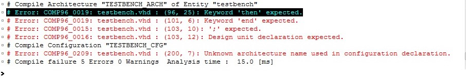
Compilation failure on Intel Questa
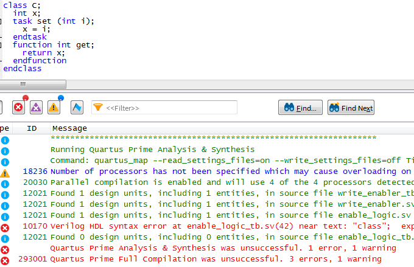
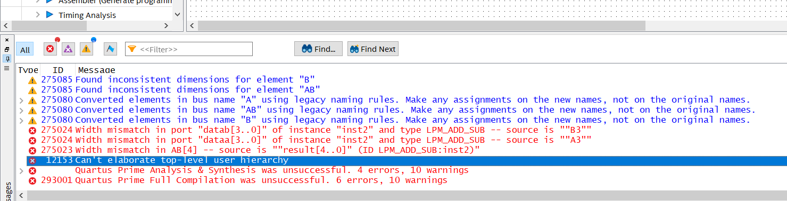
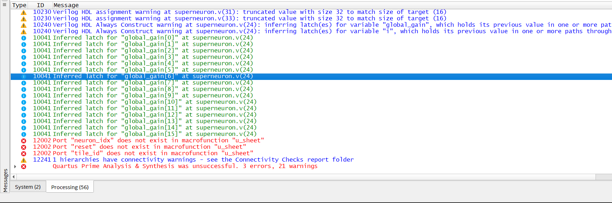
Figure 15: Fitter stage failures and compilation errors due to timing constraints across clock domain boundaries. These issues are actively being debugged through iterative floorplanning and SDC constraint adjustments.
The Neuronal Processing Unit (NonPU) is Being Developed Toward My Next Long-Term Research Vision
The NonPU project serves as foundational engineering work toward a broader research goal: creating interfaces between silicon computation and biological neuronal tissue. The skills developed here, including implementing spiking neural networks, understanding spike-timing dynamics, managing real-time signal processing under tight resource constraints, and designing hardware that speaks the language of spikes rather than floating-point matrices, are directly transferable to brain-computer interface and organoid intelligence research.
The connection is not arbitrary. A system designed to process millions of neuronal spikes per second, encode information in temporal patterns rather than continuous values, and maintain homeostatic stability through feedback control shares fundamental operational principles with the hardware required to interface with living neurons. The AC415 platform running the NonPU architecture could, with appropriate analog front-end circuitry, interpret electrical signals from electrode arrays contacting cultured neurons or brain organoids. The same differential encoding that compresses video by tracking what changes rather than what stays static could compress neural recordings by capturing spike events rather than continuous waveforms.
The goal is to make computing more efficient, less mechanical, and more fluid through the integration of Brain-Computer Interfaces and Organoid Intelligence. I plan to begin that research after achieving meaningful results here, specifically, a production-ready implementation of the Neuronal Processing Unit operating at least at 500 MHz, which will require transitioning to larger FPGA platforms such as the Cyclone V-based DE10-Nano with 110,000 logic elements and onboard DDR3 memory.
The article embedded below, published in a non-profit magazine for general audiences, explains this longer-term vision and provides context for why neuromorphic computing matters beyond video compression or pattern recognition benchmarks:


 Calculating spiking and unstable or stable behaviors of neurons using IzhiKevich Model
Calculating spiking and unstable or stable behaviors of neurons using IzhiKevich Model


 Event-driven programming is well established in software, for example, Google reCAPTCHA efficiently detects bot activity by leveraging event-driven logic and minimizing the need of consistant, Significant client-side resources. This architecture enables a seamless user experience at the software level. However, implementing true event-driven computation at the hardware level presents substantial challenges and is not currently feasible with conventional architectures.
Event-driven programming is well established in software, for example, Google reCAPTCHA efficiently detects bot activity by leveraging event-driven logic and minimizing the need of consistant, Significant client-side resources. This architecture enables a seamless user experience at the software level. However, implementing true event-driven computation at the hardware level presents substantial challenges and is not currently feasible with conventional architectures.